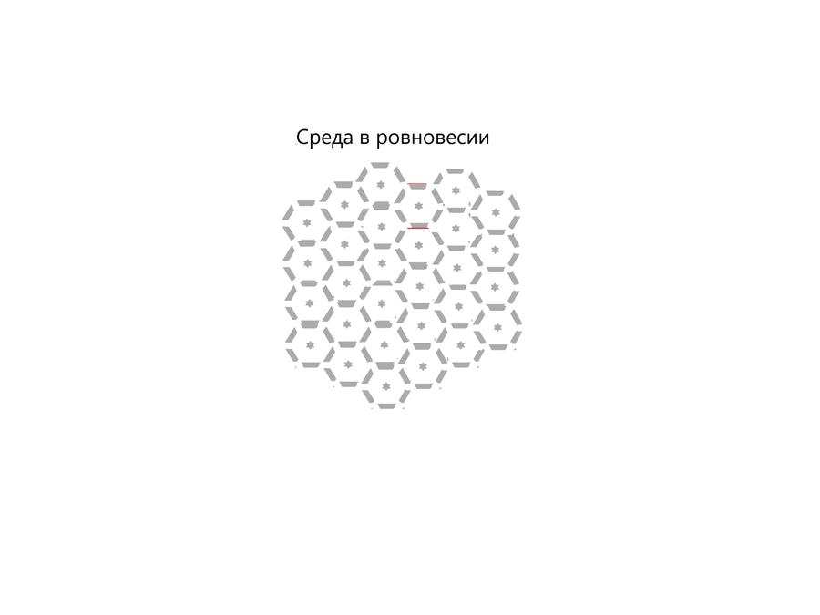
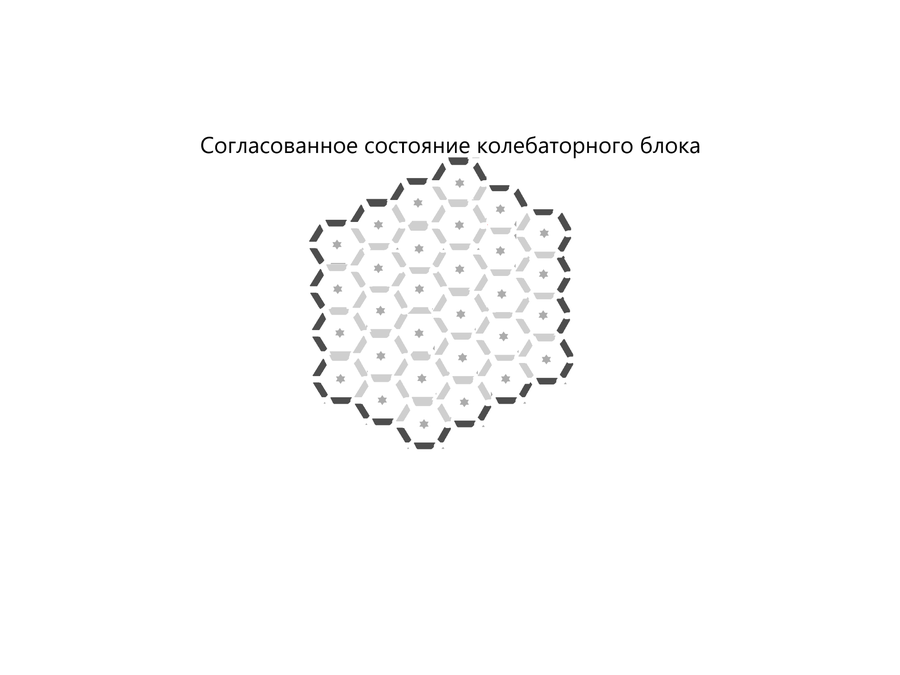
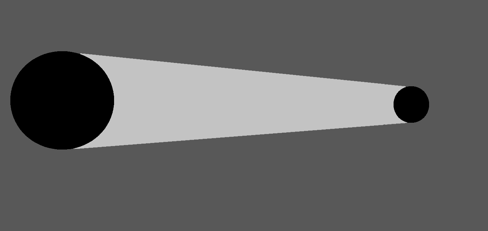
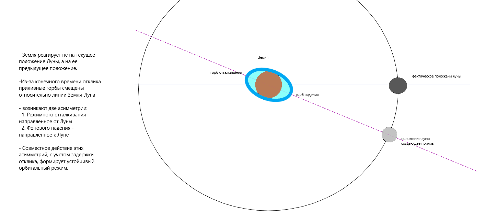
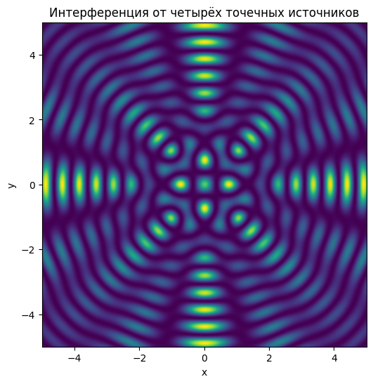

Часть 1
Вступление
Эта книга не является учебником и не построена как последовательное изложение отдельных доказательств. Она представляет собой попытку предложить целостную картину мира, в которой различные идеи образуют единую систему.
Сперва рассмотрим общую картину
Вселенная представляет собой единую конечную динамическую систему.
Пространство здесь не может быть пустым. Оно представляет собой непрерывную динамическую среду, способную изменять своё локальное состояние, передавать изменения между областями и перераспределяться.
Всё пространство наполнено этой динамической средой. При этом её локальные состояния могут различаться.
То, что мы воспринимаем как объекты, не является статичным внутри. Атом, молекула, тело, планета или звезда могут сохранять внешнюю устойчивость, хотя внутри них непрерывно происходят движения, колебания и другие процессы.
Поэтому покой объекта означает не отсутствие внутренней динамики, а то, что эта динамика достаточно уравновешена.
Любой наблюдаемый объект существует не отдельно от окружающего пространства, а внутри общей среды. Среда влияет на объекты, а объекты влияют на окружающую среду.
Среда, как и наблюдаемые объекты, обладает собственной динамикой. Поэтому изменение её локального состояния нарушает существующее динамическое равновесие и вызывает отклик окружающих областей - перераспределение направленное на восстановление динамического равновесия.
Передача возбуждения требует времени. Это связано с самим процессом перестройки и перераспределения среды. При распространении возбуждение может ослабевать, рассеиваться и взаимодействовать с различными участками среды.
Поэтому движение в данной работе рассматривается не как отдельное исходное явление, а как одно из проявлений динамического перераспределения среды.
Одни и те же общие формы организации — колебания, вращения, вихри, орбитальные движения, взаимодействие и согласование устойчивых состояний — наблюдаются на различных масштабах. Поэтому книга последовательно рассматривает возможность того, что за большим разнообразием физических явлений стоят одни и те же общие принципы.
Для наглядного описания локальной динамики непрерывную среду далее удобно условно разделять на отдельные модельные участки — колебаторы. Колебатор не является отдельной частицей. Это инструмент описания, позволяющий проследить, как изменение состояния передаётся от одной области среды к другой.
Таким образом, основную картину модели можно представить простой последовательностью:
среда → возбуждение → локальная асимметрия → перераспределение
Дальнейшие главы постепенно раскрывают отдельные элементы этой последовательности.
Исходная постановка
В этой работе используется ещё одно исходное положение: возможность существования Творца не исключается заранее.
Для примера возьмём уравнение, которое мы не можем однозначно решить:
3x − 6y = 0
А теперь просто сотрём неизвестную x, как будто стёрли её тряпкой с доски.
Получим:
3 − 6y = 0
Теперь уравнение решается очень просто:
y = 0,5
Но решили ли мы исходное уравнение?
Нет. Мы просто удалили из задачи одну из неизвестных и после этого решили уже другую, искусственно упрощённую задачу.
Именно поэтому заранее исключённая возможность может сделать решение проще, но не обязательно делает его правильным.
Поэтому здесь Творец в начале работы не вводится как доказанный вывод. Он сохраняется в рассмотрении, чтобы посмотреть, какой становится общая картина Вселенной, если Творца заранее из неё не исключать.
Дальнейшая задача состоит не в том, чтобы требовать от читателя согласия с этой исходной установкой, а в том, чтобы последовательно построить модель и проверить её внутреннюю согласованность.
7 Принципов Вселенной
Порядок и формулировка
Принцип Творца
Вселенная имеет начало и создана намеренно.
Её устройство отражает качества Творца, наличие цели, разумность и осмысленность законов.
Принцип конечности
Вселенная имела начало и является законченной созданной системой, устройство которой имеет заданные пределы.
Она ограничена по частотам, энергиям, диапазонам колебаний и времени существования процессов.
Принцип порядка
Процессы во Вселенной закономерны и образуют упорядоченную систему.
Наблюдаемая случайность не отменяет закономерности процессов и может отражать ограниченность описания или сложное перераспределение внутри системы.
Во Вселенной формируются устойчивые структуры: частицы, атомы, ядра, звёзды и планеты.
Принцип согласованности
Законы Вселенной не противоречат друг другу, действуют совместно и образуют единую систему.
Различные наблюдаемые закономерности рассматриваются как проявления одного согласованного устройства.
Не предполагается существование отдельных фундаментальных законов, действующих только для частных случаев и противоречащих общей системе.
Принцип применимости
Не каждое логически или математически возможное состояние является допустимым состоянием Вселенной.
Физически применимы только состояния и процессы, совместимые с устройством, порядком, согласованностью и пределами Вселенной.
Возможность математического описания сама по себе не означает физической реализуемости соответствующего состояния.
Модель рассматривает процессы только внутри области существования Вселенной. То, что может находиться за её пределами, не является предметом данной модели.
Принцип динамического распределения (наполненности)
Распределение материи и среды во Вселенной является динамическим: возникающие различия вызывают непрерывное перераспределение.
Перераспределение направлено на уменьшение различий и поддержание динамического равновесия.
Следствием этой динамики является заполненность доступной области пространства и формирование устойчивых распределений, конфигураций и структур.
Принцип масштабной повторяемости
Колебания, орбиты, спирали, вихри и другие формы организации повторяются на микро-, макро- и космических масштабах.
Одни и те же общие принципы организации и закономерности могут проявляться на различных масштабах Вселенной.
Эти 7 принципов фиксированы как базовая логическая последовательность, из которой далее будут выведены законы, формы, пределы, режимы и предельные состояния.
Пространство как конечная наполненная среда
В рамках данного рассмотрения свойства пространства определяются исходными принципами модели.
Согласно Принципу Творца, Вселенная имеет начало и рассматривается как созданная система. Согласно Принципу конечности, она не является бесконечной: область существования Вселенной конечна.
Однако конечность сама по себе ещё ничего не говорит о внутреннем устройстве этой области. Здесь вступает в действие Принцип наполненности: внутри Вселенной не предполагается абсолютной пустоты. Пространство не рассматривается как пустой пассивный объём, внутри которого отдельно находятся материя и взаимодействия. Оно представляет собой наполненную область.
В рамках данной модели это наполнение далее называется средой.
Такое представление согласуется с наблюдаемым свойством окружающего мира: изменение, возникшее в одной области, способно передаваться другой области. Мы наблюдаем распространение света, тепла, звука и механических возмущений, электрические взаимодействия и гравитационное влияние. Несмотря на различие этих явлений, во всех случаях присутствует общий признак — изменение состояния в одной области связано с изменениями в других областях.
В привычных нам жидкостях, газах и твёрдых телах передача взаимодействия осуществляется через среду. Принцип масштабной повторяемости позволяет рассмотреть возможность того, что тот же общий способ организации сохраняется и на других масштабах. Поэтому в данной модели предполагается, что всё пространство Вселенной представляет собой единую непрерывную среду, в которой возможны взаимодействия и распространение изменений.
Такое пространство обладает рядом характерных свойств:
взаимодействия распространяются с конечной скоростью;
изменение, возникшее локально, передаётся соседним областям;
при распространении воздействие может ослабевать и рассеиваться;
после локального возмущения происходит перераспределение состояния среды;
устойчивое состояние восстанавливается либо формируется новое динамическое равновесие.
Таким образом, пространство в данной модели не является неподвижным фоном. Оно представляет собой конечную, наполненную и непрерывно динамическую среду.
При этом динамика среды не означает, что всё пространство буквально находится в одинаковом колебательном движении. Речь идёт о непрерывном взаимодействии и перераспределении локальных состояний среды. Колебания, возбуждения и другие наблюдаемые процессы являются отдельными проявлениями этой общей динамики.
Поэтому далее пространство будет рассматриваться не как абстрактная пустота, а как непрерывная динамическая среда, способная передавать взаимодействия, изменять своё локальное состояние, перераспределяться и восстанавливать динамическое равновесие.
Следующий шаг состоит в построении упрощённой модели, позволяющей описывать отдельные участки такой среды и их отклик на возбуждение.
Модель среды
Для дальнейшего описания процессов, происходящих в пространстве, введём упрощённую модель непрерывной динамической среды.
Сама среда рассматривается как непрерывная. Однако для анализа её локальных изменений удобно условно разделить её на отдельные участки. Такой модельный участок далее будем называть колебатором.
Колебатор — это модель локального участка непрерывной среды, способного изменять своё состояние, взаимодействовать с соседними участками и возвращаться к равновесному состоянию после внешнего воздействия.
Колебатор не является отдельной частицей или обязательным элементом реального строения среды. Это единица модельного описания, позволяющая рассматривать передачу изменений от одной области среды к другой.
Равновесное состояние
Среда не находится в абсолютном покое. Она непрерывно пребывает в динамике и внутреннем перераспределении.
В дальнейшем колебания используются как одна из основных моделей описания динамики среды. Однако сама динамика среды понимается шире колебательного движения: возникающие различия состояний вызывают перераспределение, направленное на установление динамического равновесия. Такое перераспределение может проявляться в виде колебаний, потоков, перестройки состояний и других динамических режимов.
При этом каждый локальный участок среды может находиться в динамическом равновесии — состоянии, при котором внутренние изменения взаимно уравновешиваются и среднее состояние участка сохраняется.
В модели этому соответствует равновесное состояние колебатора.
Каждый колебатор имеет равновесное состояние. При внешнем воздействии его состояние изменяется не мгновенно: отклик требует конечного времени. После прекращения воздействия происходит перераспределение, направленное на восстановление динамического равновесия.
Возбуждение
Возбуждением называется отклонение локального участка среды от его равновесного состояния.
Такое отклонение может проявляться, например, как:
- локальное уплотнение среды;
- локальное разрежение среды.
Передача возбуждения
Поскольку среда непрерывна, изменение одного локального участка связано с состоянием соседних участков.
Если один колебатор отклоняется от равновесного состояния, возникшее изменение воздействует на соседний колебатор и также отклоняет его от равновесия.
Тот, в свою очередь, воздействует на следующий участок.
Таким образом возникает последовательная передача возбуждения:
отклонение от равновесия → локальное уплотнение или разрежение → воздействие на соседнюю область → новое отклонение → дальнейшее распространение возбуждения.
При этом отдельный участок среды не обязан перемещаться вместе с распространяющимся возбуждением на большое расстояние. Передаётся прежде всего изменение состояния среды.
Именно такая последовательность локальных отклонений позволяет описывать распространение возбуждения, волны или взаимодействия от одной области среды к другой.
Вихревая организация возбуждений
В рамках данной модели предполагается, что устойчивое возбуждение, распространяющееся в непрерывной динамической среде, имеет вихревую организацию.
Линейная передача состояния может рассматриваться как локальное приближение, однако при длительном распространении конечный отклик и непрерывное перераспределение среды приводят к формированию более сложной пространственной структуры.
Поэтому вихревая форма рассматривается не как свойство отдельного вида взаимодействия, а как общий способ организации устойчивых распространяющихся возбуждений.
Восстановление равновесия
После прохождения возбуждения локальный участок среды стремится восстановить динамическое равновесие.
Это происходит посредством внутреннего перераспределения среды и взаимодействия с соседними областями.
Восстановление не является мгновенным. Оно требует конечного времени и может сопровождаться рассеянием части первоначального возбуждения.
Поэтому модель среды должна учитывать следующие свойства:
непрерывную внутреннюю динамику;
наличие динамического равновесия;
способность локально отклоняться от равновесного состояния;
возникновение локального уплотнения и разрежения;
взаимодействие соседних областей;
конечное время отклика;
устойчивость и инертность локального состояния;
передачу возбуждения от одной области к другой;
перераспределение среды;
восстановление равновесия;
рассеяние и затухание возбуждения при распространении.
Таким образом, среда рассматривается как непрерывная динамическая система, в которой локальное нарушение равновесия вызывает последовательное перераспределение состояния соседних областей.
Колебатор служит простейшей моделью такого локального участка и позволяет наглядно рассматривать механизм возникновения, передачи и затухания возбуждений.
На этой основе далее можно построить графическую модель распространения возбуждения в среде.

Согласованное состояние
Посмотреть опыт: синхронизация метрономов
▶ Открыть ролик на YouTube****
Рассмотрим известный опыт с несколькими маятниками, установленными на общей подвижной платформе . В начале такого опыта каждый маятник движется по‑своему: фазы различны, колебания не согласованы, и система выглядит как набор независимых движений.
Однако маятники связаны между собой через общую платформу. Каждый из них передаёт часть своего движения платформе, а платформа, в свою очередь, воздействует на остальные маятники. В результате между всеми элементами возникает непрямая связь через общую среду взаимодействия.
Наблюдение показывает, что через некоторое время система может перейти в более упорядоченное состояние - маятники начинают двигаться синхронно. Отдельные элементы сохраняют свою самостоятельность, но их движение уже подчинено общей динамике всей системы.
Согласованное состояние — это такое состояние системы, при котором множество колебаторов поддерживает общую устойчивую динамику благодаря взаимодействию через общую среду.
Именно здесь появляется важное понятие.
Когда согласование становится устойчивым во времени, система уже не выглядит как простая сумма отдельных движений. Она начинает вести себя как единая целостная структура.
Режим — это устойчивый согласованный процесс в среде, сохраняющий характерную структуру своей динамики во времени.
Таким образом, согласованное состояние является условием возникновения режима. Пока движения элементов остаются несогласованными, общего режима не возникает. Когда же между ними устанавливается устойчивая согласованность, появляется единая структура движения, которую уже можно рассматривать как режим.
Устойчивость режима — способность согласованной динамической структуры сохранять свою целостность и восстанавливать согласованное состояние после внешних воздействий.
Основные признаки устойчивости:
- система сохраняет общую структуру во времени;
- внешнее воздействие может временно отклонить её состояние, не разрушая внутренних связей;
- часть внешних воздействий может быть перераспределена, рассеяна, поглощена или отражена так, что общий режим сохраняется.
Важно , что переход к согласованному состоянию не происходит мгновенно. Системе требуется некоторое время, чтобы внутренние взаимодействия перестроились и пришли к устойчивому общему состоянию.
Время отклика системы — это время, необходимое системе для перехода к новому согласованному состоянию после воздействия.
Из этого следуют несколько важных выводов.
- не всякое множество элементов сразу образует режим;
- для возникновения режима необходима связь через общую среду;
- согласованное состояние формируется за конечное время;
- устойчивый режим возникает как результат согласованного состояния.

Согласование режимов
Для дальнейшего моделирования весь режим можно условно представить как один колебатор более крупного масштаба. При этом внутренняя структура режима не исчезает — она просто временно не рассматривается. Нас интересует уже поведение режима как единого целого.
Если несколько таких режимов взаимодействуют через общую среду, между ними также может возникнуть согласование.
При этом согласование не требует одинаковости. Различные режимы могут иметь разные собственные частоты, периоды и внутреннюю структуру.
Различные режимы способны образовывать согласованные состояния, однако не всякие режимы могут согласоваться между собой. Общие условия такого согласования в рамках данной модели пока не определяются. Наблюдаемый частный случай согласования — установление устойчивых отношений между периодами и фазами взаимодействующих систем. При этом частоты могут оставаться различными, а взаимная конфигурация — регулярно повторяться.
Наглядные примеры существуют в Солнечной системе. Так, Ио, Европа и Ганимед находятся в орбитальном резонансе 4:2:1: за один оборот Ганимеда Европа совершает два, а Ио — четыре, причём их взаимное расположение регулярно повторяется. Плутон и Нептун находятся в резонансе 3:2.
Устойчивое соотношение периодов и фаз может быть одним из проявлений согласования режимов.
Другой простой образ даёт музыка. Различные инструменты не должны играть одну и ту же ноту или иметь одинаковый ритм, чтобы образовать единое произведение. Их движения различны, однако при устойчивом согласовании частот, ритмов и фаз они становятся частями общей структуры — музыки.
согласованность ≠ одинаковость.
Если несколько режимов устанавливают между собой такое согласование, возникает новое общее согласованное состояние. При достаточной устойчивости оно само становится новым режимом.
Получается последовательность:
колебаторы → согласованное состояние → режим → взаимодействие режимов → новое согласованное состояние → новый режим.
Здесь проявляется Принцип масштабной повторяемости. Структура, которая на одном масштабе является результатом согласования множества элементов, на следующем масштабе сама может рассматриваться как единый элемент взаимодействия.
Режимный отклик
Режимный отклик — перестройка согласованного состояния режима в ответ на изменение условий или внешнее воздействие.
Время режимного отклика — конечное время, необходимое режиму для такой перестройки.
Режим не может перестроиться как единое целое мгновенно, потому что режим существует именно как согласованная динамика множества элементов.
Локальный элемент может начать изменять своё состояние раньше, чем изменится режим в целом. Для перестройки режима необходимо, чтобы возникшие изменения распространились между его элементами и сформировалось новое согласованное состояние.
Очень ясная последовательность:
изменение условий → локальный отклик → распространение изменений → перестройка взаимодействий → новое согласованное состояние → режимный отклик завершён.
отклик элемента ≠ отклик режима.
Элемент реагирует локально.
Режим отвечает коллективной перестройкой согласованной структуры.
Закон селективного отклика
Наблюдения показывают, что различные режимы неодинаково реагируют на внешние воздействия.
Посмотреть опыт: маятник Бартона
Посмотреть опыт: механический резонанс
Наглядный пример даёт механический резонанс . Если частота внешнего воздействия близка к собственной частоте колебательной системы, её отклик заметно возрастает. При этом соседняя система с другими внутренними параметрами может реагировать значительно слабее.
Это показывает, что характер отклика определяется не только самим воздействием, но и его соответствием внутренней динамике режима.
Резонанс представляет собой один из частных случаев такой избирательности. В более общем виде можно сказать:
различные режимы по-разному откликаются на различные воздействия.
Именно это наблюдение служит основанием для формулировки Закона селективного отклика.
Закон селективного отклика
Закон селективного отклика
Каждый режим избирательно откликается на внешние воздействия. Одни воздействия способны заметно изменить его состояние, другие вызывают слабый отклик или практически не изменяют режим. Характер отклика связан с внутренней динамикой самого режима.
Не воздействие само по себе определяет результат — результат зависит и от того, на какой режим оно действует.
При согласовании воздействия с внутренней динамикой режима отклик может возрастать.
Масштаб отклика
Масштаб отклика
Воздействие может затрагивать отдельную часть режима либо вовлекать режим целиком. Чем большая часть согласованной структуры участвует в отклике, тем заметнее изменение режима в целом.
Поэтому одно воздействие может вызвать лишь локальное изменение, тогда как другое способно привести к перестройке всего согласованного состояния.
Время отклика
Время отклика
Отклик режима происходит не мгновенно. Изменение может начаться локально, однако перестройка режима в целом требует передачи изменений между его частями и установления нового согласованного состояния.
Поэтому различные части режима могут изменяться не одновременно, а общий отклик может происходить последовательно и занимать конечное время.
режим избирателен → отклик может быть локальным или общим → отклик требует времени.
Спектр режима
Каждый режим обладает собственной динамикой. При моделировании режим можно рассматривать как колебатор и характеризовать параметрами его движения.
При этом сложный режим обычно не имеет только одного характерного периода, одной частоты или одного пространственного масштаба. В его динамике одновременно могут присутствовать несколько различных процессов.
Например, рассмотрим Землю как часть более сложного режима.
Для неё можно выделить несколько характерных пространственных масштабов:
- размер самой Земли;
- расстояние между Землёй и Луной;
- масштаб орбиты Земли вокруг Солнца.
Одновременно существуют различные периоды движения:
- период вращения Земли вокруг собственной оси;
- период обращения Луны вокруг Земли;
- период обращения Земли вокруг Солнца.
Каждому периодическому процессу соответствует собственная частота. Поэтому один сложный режим может содержать сразу несколько характерных периодов и частот, связанных с различными составляющими его динамики.
Если в режиме рассматриваются распространяющиеся или колебательные возбуждения, к этим характеристикам могут добавляться соответствующие длины волн.
Таким образом, режим характеризуется не одним параметром, а целой совокупностью:
пространственные масштабы → периоды → частоты → длины волн соответствующих возбуждений.
Эту совокупность характерных параметров далее будем называть спектром режима.
Спектр режима — совокупность характерных пространственных и временных параметров, через которые проявляется динамика данного режима.
Внешнее возбуждение также обладает собственными частотами, периодами и пространственными характеристиками. Их совокупность можно рассматривать как спектр возбуждения.
При взаимодействии внешнего возбуждения с режимом происходит сопоставление их характеристик:
спектр возбуждения ↔ спектр режима.
Различные составляющие возбуждения могут по-разному взаимодействовать с различными составляющими режима. Поэтому один и тот же режим способен давать различный отклик в зависимости от того, какие параметры внешнего возбуждения связаны с его собственной динамикой.
Это и создаёт основу для дальнейшего рассмотрения селективного отклика режима.
Затухание и выравнивание
Затухание
При распространении возбуждения через среду его состояние не остаётся неизменным.
Каждый локальный режим среды обладает собственной динамикой и собственным спектром. Проходя через такой режим, возбуждение вызывает его селективный отклик.
Часть полученного возбуждения передаётся далее, а часть приводит к изменению динамического состояния самого режима, рассеивается или перераспределяется в другие составляющие динамики среды.
Поэтому возбуждение, передаваемое следующему участку, уже может отличаться от первоначального.
Последовательное уменьшение согласованной составляющей распространяющегося возбуждения далее будем называть затуханием.
Механизм затухания — изменение распространяющегося возбуждения вследствие последовательного отклика локальных режимов среды и перераспределения части возбуждения в другие составляющие её динамики.
Таким образом, затухание не означает исчезновения возбуждения. Оно означает, что всё меньшая его часть продолжает распространяться в первоначальной согласованной форме.
Выравнивание
Локальные участки среды связаны между собой. Поэтому различие их состояний не остаётся изолированным.
Если состояние одной области отличается от состояния соседней, возникающая асимметрия вызывает перераспределение между ними. Это перераспределение направлено на уменьшение различия и восстановление динамического равновесия.
Механизм выравнивания — перераспределение состояния между связанными областями среды, направленное на уменьшение локальной асимметрии.
Такое поведение наблюдается во многих известных средах: локальные различия температуры, давления и других состояний со временем распространяются и перераспределяются.
В данной модели этот механизм рассматривается как общее свойство непрерывной динамической среды.
Сложное выравнивание
Механизм выравнивания направлен на уменьшение локальной асимметрии между взаимодействующими областями среды.
Однако сложный режим может содержать не одну, а несколько различных составляющих своей динамики. Поэтому и асимметрия между двумя режимами может одновременно существовать по нескольким параметрам.
В таком случае перераспределение не обязательно направлено только в одну сторону, тогда в системе могут одновременно существовать несколько разнонаправленных процессов выравнивания.
Если эти процессы взаимно компенсируются и сохраняют устойчивые отношения между режимами, возникает динамическое равновесие.
Динамическое равновесие не означает отсутствие взаимодействия. Оно может представлять собой состояние - Форму, в котором несколько продолжающихся перераспределений взаимно уравновешивают друг друга.
Совместное действие
Затухание и выравнивание описывают два различных, но связанных процесса.
Затухание - уменьшение возбуждения вдоль направления распространения.
Выравнивание вызывает перераспределение, направленное на уменьшение этого различия.
Поэтому их совместное действие можно представить последовательностью:
возбуждение → селективный отклик → затухание → локальная асимметрия → выравнивание → перераспределение среды.
Если возбуждение возникает однократно, возникшая асимметрия постепенно уменьшается.
Если источник постоянно поддерживает возбуждение, различие состояний постоянно создаётся заново. В этом случае процесс выравнивания также становится непрерывным.
Выравнивающий поток
Рассмотрим источник, который непрерывно создаёт возбуждение в среде.
Возбуждение распространяется от источника через последовательность локальных режимов среды. При прохождении через каждый режим возникает селективный отклик: часть возбуждения передаётся далее, а часть перераспределяется и изменяет динамическое состояние самого режима.
Поэтому по мере удаления от источника передаваемое возбуждение постепенно изменяется и затухает. Возникает пространственная асимметрия: области, расположенные ближе к источнику, постоянно получают большее возбуждение, чем более удалённые области.
Механизм выравнивания стремится уменьшить возникающую разницу состояний. Однако источник продолжает создавать новое возбуждение и тем самым постоянно восстанавливает асимметрию.
В результате выравнивание не завершается, а превращается в непрерывное направленное перераспределение среды.
Выравнивающий поток — устойчивое направленное перераспределение среды, возникающее при постоянно поддерживаемой источником асимметрии её состояний.
Таким образом:
постоянный источник возбуждения → распространение возбуждения → затухание → поддерживаемая асимметрия → непрерывное выравнивание → выравнивающий поток.
Если источник прекращает создавать возбуждение, поддерживаемая асимметрия постепенно уменьшается, и выравнивающий поток затухает вместе с ней.
Основной выравнивающий поток
Если источник создаёт возбуждение в некоторой области среды, то наибольшая асимметрия возникает вблизи источника. Поэтому основной выравнивающий поток направлен от области возбуждения наружу, в сторону менее возбуждённых областей.
Именно этот поток обеспечивает направленное перераспределение среды и является главным проявлением того, что возбуждение способно порождать движение.
Основной выравнивающий поток направлен от источника возбуждения.
Дополнительный выравнивающий поток
Однако среда не может только уходить от источника. Возникающее перераспределение само создаёт новую асимметрию в окружающей области. Поэтому одновременно возникают и дополнительные потоки, направленные на компенсацию этой новой асимметрии.
Эти потоки можно рассматривать как дополнительные выравнивающие потоки. Они не отменяют основной поток, а сопровождают его и обеспечивают общее согласование перераспределения среды.
Дополнительный выравнивающий поток — это поток, возникающий как компенсация асимметрии, создаваемой основным выравнивающим потоком.
Иначе говоря:
основной поток переносит перераспределение от источника;
дополнительный поток согласует окружающую среду с этим перераспределением.
Именно поэтому в реальной среде направленное течение обычно сопровождается возвратными, боковыми или замыкающими потоками.
Общая схема
Логическая цепочка выглядит так:
возбуждение → частичная перестройка режима колебаторов → ослабление передаваемого возбуждения → асимметрия состояний среды → выравнивающий поток.
Если источник продолжает поддерживать возбуждение, то асимметрия не исчезает полностью. В этом случае выравнивание становится непрерывным, и выравнивающий поток приобретает устойчивый характер.
Примеры
Посмотреть опыт: ультразвуковое течение
Посмотреть опыт: акустическое воздействие
Наглядным примером такого процесса является акустическое течение. При действии колебательного источника в среде возникает устойчивое направленное течение. При этом наблюдается не только основной поток от области возбуждения, но и сопутствующие потоки, компенсирующие создаваемую асимметрию.
Поэтому акустическое течение можно рассматривать как частный случай выравнивающего потока.
Кровеносная система человека также показывает, как постоянно действующий источник возбуждения способен поддерживать устойчивый поток в среде. Сердце периодически создаёт изменение давления, которое распространяется по крови и сосудам; благодаря непрерывной работе источника движение не прекращается, а поддерживается как устойчивый поток.
Механизм кровотока отличается от акустического течения, однако оба примера наглядно показывают общий принцип: постоянно поддерживаемое возбуждение способно создавать устойчивое направленное движение среды.
Когда выравнивающий поток не возникает
Выравнивающий поток возникает не при любом возбуждении. Согласно Закону селективного отклика, характер взаимодействия зависит от соотношения характеристик возбуждения и режима среды, через который оно распространяется.
Для волнового возбуждения одним из таких параметров является его длина волны. Под масштабом режима здесь понимается характерный пространственный масштаб той части режима среды, которая непосредственно участвует во взаимодействии.
Можно выделить три основных случая.
Длина волны значительно больше масштаба режима
Если
$$
\lambda \gg L,
$$
то соседние участки режима получают близкое по характеру воздействие и могут двигаться вместе с общим колебанием среды.
Выраженная внутренняя асимметрия между ними практически не формируется. Поэтому механизм выравнивания не создаёт заметного направленного перераспределения.
Режим в основном следует общему колебанию среды, но выраженный выравнивающий поток не возникает.
Длина волны значительно меньше масштаба режима
Если
$$
\lambda \ll L,
$$
возбуждение взаимодействует только с отдельными локальными участками режима.
Различные части режима получают неодинаковое воздействие. Возбуждение может рассеиваться, поглощаться и перераспределяться внутри структуры, не формируя общего согласованного движения всего режима.
В этом случае также не возникает выраженного выравнивающего потока.
Масштабы сопоставимы
Если
$$
\lambda \sim L,
$$
возбуждение способно взаимодействовать с режимом как с согласованной структурой. При подходящем спектральном согласовании возникает выраженный селективный отклик, а затухание возбуждения может поддерживать пространственную асимметрию состояний среды.
Именно в таком случае создаются условия для возникновения выравнивающего потока.
Таким образом:
| Соотношение | Характер отклика |
|---|---|
| $(\lambda \gg L)$ | общее колебание режима вместе со средой |
| $(\lambda \sim L)$ | согласованный отклик; возможно выраженное направленное перераспределение |
| $(\lambda \ll L)$ | локальный отклик, рассеяние и поглощение |
Не всякое возбуждение создаёт поток. Выраженный выравнивающий поток возникает только тогда, когда возбуждение способно создать и постоянно поддерживать асимметрию, на которую режим среды отвечает согласованным направленным перераспределением.
Движение — это не отдельное физическое явление. Движение — это свойство среды к динамическому уравновешиванию.
Закон перераспределения среды
Среда находится в непрерывной динамике и способна сохранять динамическое равновесие.
Локальное возбуждение изменяет состояние отдельной области среды. Если это состояние отличается от состояния окружающих областей, возникает локальная асимметрия.
Связанные области среды не существуют независимо друг от друга. Поэтому возникшая асимметрия вызывает перераспределение между ними.
Закон перераспределения среды
Локальная асимметрия состояния непрерывной среды вызывает перераспределение между связанными областями. Это перераспределение направлено на уменьшение асимметрии и установление динамического равновесия.
Если возбуждение возникает однократно, возникшее различие постепенно перераспределяется и уменьшается.
Если же внешний источник постоянно поддерживает асимметрию, перераспределение также становится непрерывным. В этом случае может возникнуть выравнивающий поток — устойчивое направленное перераспределение среды.
Таким образом:
возбуждение → асимметрия → выравнивание → перераспределение → динамическое равновесие.
При постоянно действующем источнике:
постоянное возбуждение → поддерживаемая асимметрия → непрерывное выравнивание → выравнивающий поток.
Движение среды в рамках данной модели рассматривается не как отдельная причина, а как одна из наблюдаемых форм её перераспределения.
Направленное движение среды возникает как проявление непрерывного перераспределения, вызванного поддерживаемой асимметрией её состояния.
Этот закон не определяет конкретную форму дальнейшего движения. В зависимости от структуры взаимодействующих режимов, их спектров и условий среды перераспределение может приводить к различным динамическим состояниям.
Рассмотрение этих состояний и взаимодействия сформировавшихся режимов составляет следующий этап модели.
Закон перераспределения среды описывает динамический механизм, посредством которого Принцип наполненности реализуется в среде.
То есть Принцип наполненности задаёт исходное положение: пространство не рассматривается как абсолютная пустота, среда занимает доступную область.
А Закон перераспределения говорит уже, что происходит, если где-то возникает локальная неоднородность: среда не оставляет её изолированной, а начинает перераспределяться.
Часть 2
Как взаимодействие устойчивых режимов через эту среду порождает движение и устойчивые формы движения?
Режимное отталкивание
Любой устойчивый режим обладает собственным спектром колебаний.
Часть этого спектра передаётся в окружающую среду в виде возбуждения.
Если два режима находятся в общей среде, каждый из них воспринимает возбуждение другого. Внешнее возбуждение изменяет симметрию собственных колебаний режима. Возникает асимметрия и ответное перераспределение, направленное на её уменьшение.
Близкие по своей структуре режимы могут создавать друг для друга конкурирующее воздействие. В этом случае уменьшение взаимной асимметрии происходит через их распределение в пространстве.
Такое пространственное распределение устойчивых режимов будем называть режимным отталкиванием.
Если же режимы обладают взаимодополняющей асимметрией, возможен другой результат: их взаимное расположение может уменьшать общую асимметрию и приводить к образованию нового согласованного состояния.
Таким образом, результат взаимодействия зависит от характера отклика и устойчивости режима:
при сохранении согласованности возможно смещение режима — режимное отталкивание;
при частичном нарушении согласованности происходит изменение или деформация режима;
при потере согласованности режим распадается;
при взаимном согласовании режимов возможно образование нового общего режима.
Режимное отталкивание в данной модели не является самостоятельной фундаментальной силой. Оно является одним из возможных результатов перераспределения, возникающего при взаимодействии устойчивых режимов.
Механизм падения
В реальной среде каждый режим находится среди множества других режимов и воспринимает создаваемые ими возбуждения.
Совокупность возбуждений с реде будем называть фоновым возбуждением среды, или фоном.
Если фон воздействует на небольшой согласованный режим B со всех направлений приблизительно одинаково, его воздействие симметрично. Направленного движения режима не возникает.
Рассмотрим теперь случай, когда рядом находится крупный согласованный режим A.
Проходя через режим A, фон взаимодействует с его внутренней структурой. Часть возбуждения рассеивается, часть перераспределяется, часть изменяет свои характеристики.
В результате режим A создаёт вокруг себя асимметрию фонового возбуждения.
Теперь режим B воспринимает фон уже не одинаково со всех направлений. Со стороны режима A воздействие среды отличается от воздействия с противоположной стороны.
Возникает асимметрия колебаний режима B и направленный отклик, стремящийся уменьшить эту асимметрию.
Если собственные режимы A и B слабо согласованы, их прямое режимное взаимодействие также будет слабым. В этом случае определяющим становится не прямое воздействие A на B, а созданная режимом A асимметрия фона.
Результатом становится направленное смещение режима B в сторону режима A.
Наблюдаемую форму такого движения будем называть падением.
Таким образом, в данной модели падение рассматривается не как непосредственное притяжение одного режима другим, а как результат асимметричного воздействия фоновой среды.
По мере удаления от режима A создаваемая им асимметрия уменьшается. Если её распространение происходит в трёхмерной среде приблизительно равномерно по всем направлениям, геометрическое ослабление определяется увеличением площади сферической поверхности:
$$
S=4\pi r^2.
$$
Поэтому в первом приближении величина воздействия уменьшается пропорционально
$$
\frac{1}{r^2}.
$$
Режимное отталкивание: режим непосредственно создаёт возбуждение, вызывающее отклик другого режима от источника.
Падение: крупный режим изменяет окружающий фон, и возникшая асимметрия фонового воздействия вызывает отклик малого режима к крупному режиму.

Промахивание и вращение
Как было показано ранее, асимметрия фонового возбуждения среды создаёт направленный отклик режима и приводит к падению.
Однако отклик согласованного режима не происходит мгновенно. Для распространения возбуждения и перестройки самого режима требуется конечное время.
Если взаимодействующие режимы движутся, за это время их взаимное положение успевает измениться. Поэтому направление отклика оказывается немного смещено относительно текущего положения источника воздействия.
Такое смещение будем называть промахиванием.
Если асимметричное воздействие сохраняется, разные части режима получают неодинаковый отклик. Возникает устойчивая асимметрия колебаний и внутреннее перераспределение режима.
Одной из возможных форм такого перераспределения является собственное вращение.
Формирование орбит
Орбита рассматривается как устойчивый режим движения, возникающий при совместном действии нескольких видов асимметрии.
Основными составляющими орбитального режима являются:
Падение — направленный отклик на асимметрию фонового возбуждения.
Режимное отталкивание — взаимное перераспределение взаимодействующих режимов.
Промахивание — смещение направления отклика вследствие его конечного времени.
Отклик на каждое из этих воздействий не является мгновенным. Падение, режимное отталкивание и промахивание вызывают собственное перераспределение, которое развивается в течение некоторого времени. Поэтому отдельные отклики накладываются друг на друга и действуют уже при изменившемся положении режимов.
В результате противоположные направления перераспределения не обязательно приводят к прямому столкновению. Возникающее движение может обходить область столкновения, формируя непрерывную криволинейную траекторию. Такое движение можно представить как обтекание положения равновесия.
Каждый из этих процессов является проявлением одного общего механизма — отклика среды на возникающую асимметрию.
Падение направляет режим в сторону крупного объекта. Режимное отталкивание создаёт противоположное перераспределение. При этом отклик происходит с задержкой, поэтому направление движения не совпадает точно с текущим направлением на положение равновесия.
В результате возникает непрерывное промахивание, и прямолинейное движение может перейти в устойчивую орбитальную траекторию.
В рамках данной модели орбита возникает как устойчивый режим совместного действия падения, режимного отталкивания и конечного времени отклика.
Соотношение масштабов
Характер орбитального режима зависит от соотношения масштабов взаимодействующих режимов.
На данном этапе остаётся открытым вопрос, при каких соотношениях масштабов возможно образование устойчивого орбитального режима.
Итог
Орбитальное движение не рассматривается как отдельный вид взаимодействия. Оно представляет собой устойчивый режим, возникающий при совместном действии нескольких источников асимметрии и конечного времени отклика.
Приливные эффекты
Наблюдаемое проявление двойной асимметрии
Предложенная модель предполагает, что формирование орбитального режима определяется совместным действием нескольких источников асимметрии. Наиболее важными из них являются фоновое падение и режимное отталкивание, отклик на которые не является мгновенным.
Наблюдаемым примером подобного поведения можно рассматривать приливные эффекты в системе Земля—Луна.
Приливная деформация Земли не располагается строго на линии, соединяющей центры масс Земли и Луны. Вследствие конечного времени отклика вещества приливной выступ оказывается смещён относительно текущего положения Луны. Таким образом, наблюдается отклик, происходящий с задержкой, вследствие чего воздействие оказывается направленным не точно по линии взаимодействия, а с некоторым угловым смещением.
В рамках данной модели подобное смещение рассматривается как общее проявление конечного времени перестройки согласованного режима. Любое устойчивое состояние не изменяется мгновенно, а перестраивается постепенно, вследствие чего возникает смещение траектории воздействия.

Таким образом, наблюдаемая картина демонстрирует, что устойчивое орбитальное движение сопровождается по меньшей мере двумя различными источниками асимметрии и конечным временем отклика системы. В предлагаемой модели именно совместное действие этих факторов приводит к формированию устойчивого орбитального режима.
Внешнее перераспределение среды
Рассмотрим крупный устойчивый режим, движущийся через динамическую среду.
Поскольку среда обладает конечным временем отклика, она не может мгновенно перестраиваться вслед за движущимся режимом.
Перед режимом возникает область локального уплотнения, а за ним — область локального разрежения среды. Возникает устойчивая асимметрия.
Среда стремится уменьшить эту асимметрию, поэтому между областями уплотнения и разрежения возникает непрерывное перераспределение.
Пока режим продолжает движение, асимметрия постоянно создаётся заново. Поэтому поток среды также сохраняется и становится устойчивой частью движения режима.
Такое перераспределение может приобретать вихревую форму (см. приложение «Вихрь»).
В результате вокруг движущегося режима формируется устойчивый внешний вихрь перераспределения среды.
Если режим обладает собственным вращением, оно также участвует в формировании окружающего перераспределения и создаёт дополнительную асимметрию.
Таким образом, движущийся режим не только изменяет собственное положение в среде, но и формирует вокруг себя устойчивый режим её перераспределения.
Вложенные режимы перераспределения
Крупные движущиеся и вращающиеся режимы формируют вокруг себя собственные области перераспределения среды.
Такие режимы не существуют изолированно. Каждый из них находится внутри более крупной динамической структуры и одновременно может содержать более мелкие режимы.
Так возникает иерархия вложенных вихревых режимов:
галактические режимы;
звёздные системы;
планетарные режимы;
локальные режимы вещества.
Каждый последующий уровень существует внутри более крупного вихревого режима и наследует его общую структуру перераспределения, но сохраняет собственную внутреннюю динамику.
Например, планеты движутся внутри общего режима Солнечной системы. Большинство планет обращаются вокруг Солнца в одном направлении и приблизительно в одной плоскости. В рамках данной модели это можно рассматривать как проявление их согласованности с более крупным солнечным режимом.
При этом каждая планета сама создаёт вокруг себя собственное локальное перераспределение среды. Таким образом, планетарный режим формируется уже внутри среды, состояние которой изменено более крупным солнечным режимом.
Согласование асимметрий
Вложенные режимы не просто накладываются друг на друга. Их асимметрии также взаимодействуют и согласуются.
Крупный режим задаёт общее направление перераспределения среды, а более мелкий режим формирует внутри него собственную локальную структуру.
В результате возникает сложная система, в которой каждый уровень сохраняет собственную асимметрию, но одновременно существует внутри асимметрии более крупного уровня.
Такую структуру можно представить как последовательность:
галактический режим → звёздный режим → планетарный режим → локальные режимы вещества.
В рамках Принципа масштабной повторяемости можно предположить, что подобное согласование продолжается и на меньших масштабах, включая электромагнитные и электронные режимы.
На данном этапе это рассматривается как гипотеза о связи вращательных режимов разных масштабов, а не как установленный механизм.
Каплевидная асимметрия
При движении вложенного режима внутри более крупного потока его внешнее перераспределение становится несимметричным.
Со стороны встречного потока область перераспределения может быть сжата, а с противоположной стороны — вытянута в протяжённый след.
Возникает характерная каплевидная асимметрия.
Подобные формы наблюдаются, например, у магнитосфер планет при их взаимодействии с солнечным ветром.
В рамках данной модели такую картину можно рассматривать как наблюдаемое проявление взаимодействия двух вложенных режимов перераспределения: более крупного солнечного и локального планетарного.
Таким образом, вложенные вихревые режимы образуют не набор независимых структур, а иерархию взаимно связанных перераспределений среды, в которой каждый меньший режим формируется внутри уже существующей динамики более крупного.
Электрический заряд
В рамках данной модели электрический заряд рассматривается как устойчивое локальное нарушение равновесия среды.
Такое нарушение может существовать в двух основных формах:
положительный заряд — устойчивое локальное уплотнение среды;
отрицательный заряд — устойчивое локальное разрежение среды.
Обычное уплотнение или разрежение со временем должно было бы выровняться. Однако заряд существует устойчиво, поскольку поддерживается внутренней динамикой самого режима.
Поэтому заряд можно рассматривать как локализованное состояние среды, которое сохраняет собственную асимметрию во времени.
Положительный и отрицательный заряд
Положительный и отрицательный заряд являются не двумя различными сущностями, а двумя противоположными состояниями одной и той же среды.
При положительном заряде существует область локального уплотнения. Среда стремится перераспределиться от этой области наружу.
При отрицательном заряде существует область локального разрежения. Среда стремится компенсировать это состояние перераспределением в сторону области разрежения.
Таким образом, знак заряда показывает направление локальной асимметрии среды.
Электрическое поле
Устойчивая асимметрия заряда влияет не только на сам режим, но и на окружающую его среду.
Возникает область направленного перераспределения, связанная с локальным уплотнением или разрежением.
Эту область будем рассматривать как электрическое поле.
Таким образом, электрическое поле является пространственным продолжением асимметрии заряда и показывает, каким образом окружающая среда стремится компенсировать это локальное нарушение равновесия.
При этом поле не обязательно представляет собой движение среды в одном направлении во всей области. Оно задаёт структуру возможного перераспределения, а выраженный направленный поток возникает при взаимодействии нескольких асимметричных режимов.
Взаимодействие зарядов
При взаимодействии двух зарядов их области перераспределения накладываются друг на друга.
Если взаимодействуют два положительных заряда, обе области уплотнения создают направленное перераспределение наружу. Возникает конкуренция режимов, результатом которой становится их пространственное раздвижение.
Аналогично взаимодействуют два отрицательных заряда. Две области разрежения создают одинаково направленные требования к окружающей среде и также формируют конкурирующее состояние.
Поэтому одноимённые заряды стремятся распределиться в пространстве.
Иная ситуация возникает при взаимодействии положительного и отрицательного заряда.
Область уплотнения и область разрежения являются взаимодополняющими. Между ними возникает направленное перераспределение среды:
локальное уплотнение → локальное разрежение.
Такое перераспределение уменьшает общую асимметрию системы и создаёт условия для сближения режимов и образования общего согласованного состояния.
Таким образом:
одинаковые асимметрии → конкуренция → отталкивание;
взаимодополняющие асимметрии → согласование → притяжение.
Характер и величина отклика при этом определяются Законом селективного отклика и внутренней динамикой взаимодействующих режимов.
Итог
В рамках данной модели электрическое взаимодействие не рассматривается как действие отдельной фундаментальной силы.
Заряд представляет собой устойчивое локальное уплотнение или разрежение среды.
Электрическое поле представляет собой структуру перераспределения среды вокруг этой асимметрии.
Притяжение и отталкивание зарядов возникают как разные результаты взаимодействия и перераспределения этих асимметричных состояний.
Таким образом, электрическое взаимодействие рассматривается как частный случай общего механизма:
асимметрия → перераспределение → согласование или пространственное разделение режимов.
Итоги 2 части
Центральное понятие
асимметрия колебаний режима
(или: режимная асимметрия отклика)
Смысл этого понятия
Режим (любая устойчивая система: вихрь, атом, планета, поток, гироскоп):
не реагирует одинаково на воздействие во всех фазах своего собственного цикла
имеет конечное время перестройки (конечный отклик)
поэтому реакция становится несимметричной во времени/фазе/направлении
Главный вывод
общий принцип:
всё наблюдаемое движение есть проявление асимметрии колебаний режима при конечном отклике системы
Важное следствие
Эта асимметрия:
зависит от масштаба (размера режима)
проявляется на всех уровнях (от микроскопического до космического)
может по-разному выглядеть в разных средах (механика, жидкости, электромагнетизм)
Перевод языка физики
В твоей логике:
“сила”
“заряд”
“полярность”
“взаимодействие”
— это не первичные сущности, а разные проявления одного и того же:
режимной асимметрии колебательного отклика
Итоговая формулировка “ 2 части ”
Если собрать максимально компактно:
Все наблюдаемое движение является проявлением асимметрии колебаний устойчивых режимов.
Эта асимметрия возникает из-за конечного отклика системы на внешние воздействия и приводит к неравномерной перестройке цикла во времени и пространстве.
Разные физические явления (механические, гидродинамические, электромагнитные и др.) являются различными проявлениями одного и того же принципа режимной асимметрии.
Часть 3
Принцип фильтрации возбуждений
Любое распространяющееся возбуждение проходит через среду и взаимодействует с находящимися в ней устойчивыми режимами.
В соответствии с Законом селективного отклика разные составляющие возбуждения взаимодействуют со средой по-разному.
Часть возбуждения может сохраняться и распространяться дальше. Другая часть может рассеиваться, поглощаться или перераспределяться средой.
В результате по мере распространения первоначальный спектр возбуждения может изменяться.
Этот процесс будем называть фильтрацией возбуждения.
Принцип фильтрации возбуждений:
среда избирательно взаимодействует с различными составляющими распространяющегося возбуждения, поэтому в процессе распространения его спектр может изменяться.
Таким образом, одно и то же возбуждение может распространяться по-разному в разных средах, а разные возбуждения — иметь различную дальность распространения в одной и той же среде.
Роль масштаба
Одним из важных факторов фильтрации является соотношение масштаба возбуждения и масштаба режимов среды.
Распространяющееся возбуждение взаимодействует с конкретными устойчивыми режимами, обладающими собственным спектром и пространственным масштабом.
Поэтому характер распространения зависит в том числе от соотношения спектра и масштаба возбуждения со спектром и масштабом режимов среды.
Масштабная фильтрация является частным случаем общего принципа фильтрации возбуждений.
В результате одни возбуждения способны сохранять свою структуру на больших расстояниях, тогда как другие быстрее ослабляются, рассеиваются, поглощаются или перераспределяются средой.
Таким образом:
возбуждение → взаимодействие со средой → фильтрация → изменённое возбуждение.
Перестройка режимов: слабые взаимодействия и нарушение зеркальной симметрии
Слабые взаимодействия
В современной физике слабое взаимодействие связывают с процессами, при которых изменяется внутреннее состояние частиц.
Одним из наиболее известных примеров является β-распад свободного нейтрона:
нейтрон → протон + электрон + электронное антинейтрино.
В рамках предлагаемой модели такой процесс можно рассматривать как перестройку одного устойчивого режима в другой.
Устойчивый режим существует, пока его внутренняя динамика согласована с окружающей средой. Если условия изменяются и прежнее состояние перестаёт быть устойчивым, система может перестроиться в новое согласованное состояние.
Таким образом, слабое взаимодействие в данной модели рассматривается не как отдельная фундаментальная сила, а как процесс режимной перестройки.
Нарушение зеркальной симметрии
Одной из особенностей слабых взаимодействий является нарушение зеркальной симметрии: некоторые процессы различают левое и правое направления.
В рамках данной модели это можно связать с тем, что сама окружающая среда уже обладает собственной динамикой и асимметрией.
Если режим существует внутри такой среды, его перестройка происходит не в полностью симметричных условиях.
Простой образ даёт течение реки. Движение лодки зависит от направления течения, поскольку сама среда уже имеет выделенное направление.
Подобным образом можно предположить, что и при перестройке микроскопических режимов окружающая среда задаёт определённые предпочтительные направления согласования.
Рабочая гипотеза: нарушение зеркальной симметрии может быть следствием того, что перестройка режима происходит внутри уже асимметричного состояния среды.
Гипотеза о нейтронном режиме
В рамках данной модели предполагается, что нейтрон представляет собой особый компактный режим, возникающий при глубокой перестройке протонно-электронной системы.
Речь идёт не о простом механическом соединении протона и электрона. Предполагается, что при такой перестройке значительная часть их внешней асимметрии замыкается внутри общего режима. В результате возникает более компактное и внешне электрически нейтральное состояние.
Замыкание и раскрытие режима
Нейтрон представляет собой внутренне согласованный и сравнительно замкнутый режим. Значительная часть его асимметрии заключена во внутренней структуре, поэтому число каналов взаимодействия с внешними возбуждениями ограничено.
Такая замкнутость позволяет сохранять компактное состояние, но одновременно уменьшает возможности режима согласовываться с изменяющимися возбуждениями окружающей среды.
При переходе нейтрона в систему «протон + электрон» происходит не просто разделение одного объекта на два. Возникает новое согласованное состояние.
В нём появляются дополнительные каналы взаимодействия со средой: собственный отклик протона, собственный отклик электрона и их совместная динамика.
Поэтому протонно-электронная система может взаимодействовать с более широким спектром внешних возбуждений.
Таким образом, переход между нейтроном и протонно-электронной системой можно рассматривать как переход между:
более замкнутым и компактным режимом;
более открытым режимом с большим числом каналов взаимодействия со средой.
Устойчивость этих состояний зависит от условий окружающей среды.
В плотной ядерной системе нейтронный режим может сохраняться как часть общего согласованного состояния. В свободной среде условия меняются, и нейтрон со временем может потерять устойчивость и перестроиться.
В рамках данной гипотезы β-распад рассматривается как наблюдаемое проявление такой перестройки.
Эта интерпретация является гипотезой модели и должна согласовываться с наблюдаемыми свойствами нейтрона и продуктами его распада.
Роль нейтрона в ядре
Обычный водород показывает, что простейший устойчивый атом может существовать без нейтрона: его ядро состоит из одного протона.
Однако при усложнении ядер нейтроны начинают играть всё более заметную роль. У тяжёлых устойчивых ядер число нейтронов обычно уже превышает число протонов.
В рамках предлагаемой модели это можно связать с увеличением числа внутренних асимметрий.
Каждый дополнительный протон увеличивает положительную электрическую асимметрию и усиливает конкуренцию однотипных режимов.
Нейтрон при этом позволяет увеличить внутреннюю структуру и плотность ядра без пропорционального увеличения его асимметрии.
Поэтому нейтрон можно рассматривать как один из механизмов внутреннего согласования плотной ядерной структуры.
Чем сложнее становится ядро, тем большую роль может играть такая форма внутренней компенсации.
При этом эта компенсация также имеет предел: далеко не любые сочетания протонов и нейтронов образуют устойчивые ядра.
Итог
В рамках данной модели слабые взаимодействия рассматриваются как проявление **перестройки устойчивых режимов **.
Нарушение зеркальной симметрии может быть связано с тем, что такая перестройка происходит внутри среды, которая сама обладает направленной асимметрией.
Нейтрон, в свою очередь, рассматривается как возможный компактный режим внутреннего замыкания протонно-электронной системы, позволяющий формировать более плотные и сложные ядерные структуры без пропорционального роста асимметрии.
Таким образом, общий механизм можно представить так:
изменение условий → потеря прежней согласованности → перестройка режима → новое согласованное состояние.
Ядерные взаимодействия
Масштаб ядерных возбуждений
Атом имеет характерный размер порядка $10^{-10}$ м, тогда как размер атомного ядра составляет порядка $10^{-15}$ м.
Таким образом, ядерные процессы происходят на масштабе примерно в 100 000 раз меньшем, чем характерный масштаб атома.
В рамках данной модели ядерные взаимодействия рассматриваются как возбуждения очень малого пространственного масштаба, связанные с внутренними режимами ядра.
В соответствии с Законом селективного отклика такие возбуждения наиболее заметно взаимодействуют с режимами, способными на них откликаться.
При распространении через более сложную среду их структура может рассеиваться, поглощаться или перераспределяться в соответствии с Принципом фильтрации возбуждений.
Поэтому ядерные возбуждения сохраняют выраженное взаимодействие преимущественно на малых расстояниях.
Короткодействие ядерных взаимодействий в данной модели рассматривается как следствие характера и масштаба соответствующих возбуждений и их фильтрации окружающей средой.
На своём масштабе такие взаимодействия могут быть доминирующими, тогда как на более крупных масштабах начинают преобладать уже другие согласованные режимы.
Важно при этом различать отдельное возбуждение и коллективный режим более высокого уровня.
Если множество ядер образует новое согласованное состояние, свойства этого состояния уже не обязаны совпадать со свойствами отдельного ядерного возбуждения.
Нельзя автоматически переносить свойства отдельного режима на коллективный режим более высокого уровня.
Образование устойчивых ядерных структур
Устойчивое ядро рассматривается как согласованный колебательный режим, возникающий при взаимодействии нескольких внутренних режимов.
Протоны обладают сходной асимметрией и поэтому создают взаимное режимное отталкивание. Само по себе такое взаимодействие препятствует образованию плотной устойчивой структуры.
Однако по мере увеличения плотности вещества возрастает влияние окружающих ядерных режимов. Возникает фоновое ядерное возбуждение, которое действует уже не как отдельный локальный источник, а как общий фон.
В результате наряду с режимным отталкиванием появляется и механизм падения — направленный отклик на асимметрию фонового возбуждения.
Таким образом, внутри плотной ядерной среды одновременно действуют как минимум два противоположных механизма:
режимное отталкивание ↔ фоновое падение.
Их совместное действие создаёт условия для формирования устойчивых согласованных состояний.
Дополнительную роль играет взаимодействие протона и электрона.
Протон и электрон способны существовать как самостоятельные устойчивые режимы среды. Каждый из них обладает собственной устойчивой асимметрией, проявляющейся как электрический заряд.
Эти асимметрии имеют взаимодополняющий характер. Поэтому при взаимодействии протона и электрона возникает не конкуренция однотипных режимов, а возможность уменьшения общей асимметрии через образование нового согласованного состояния.
В рамках данной модели именно зарядовая асимметрия является основным каналом согласования протона и электрона.
Таким образом, формирование ядра определяется совместным действием:
- режимного отталкивания;
- фонового ядерного возбуждения и связанного с ним падения;
- нейтронных режимов внутреннего согласования;
- взаимодополняющих протонно-электронных асимметрий.
Устойчивое ядро рассматривается как сложный согласованный режим, возникающий из совместного действия нескольких механизмов перераспределения и отклика.
По мере усложнения ядра возрастает значение коллективного состояния всей системы. Отдельный протон или нейтрон уже нельзя рассматривать полностью независимо от режима ядра, частью которого он является.
Излучение
Источник излучения
Любой источник создаёт в окружающей среде собственный спектр возбуждений. Часть этих возбуждений может отделяться от локального режима источника и распространяться дальше через среду.
Именно такое распространяющееся возбуждение в данной модели рассматривается как излучение.
Таким образом, свет можно представить как распространяющийся в среде след динамики источника, несущий информацию о характерном спектре его возбуждений.
Свет как распространение возбуждения среды
В данной модели свет рассматривается как устойчивый вихревой режим возбуждения, распространяющийся в динамической среде. При этом через пространство перемещается не отдельный объект, а последовательно передаётся организованное состояние колебаний среды.
Речь идёт не о простой последовательности колебаний, распространяющейся вдоль прямой линии. Возбуждение среды организовано таким образом, что локальные изменения образуют спиральную структуру, которая как единый режим передаётся от одной области среды к другой.
Такое возбуждение можно представить как распространяющийся вихревой режим, в котором колебательное движение одновременно связано с направлением распространения и внутренним вращением.
При этом волновые свойства света не отрицаются. Волна описывает характер распространения возбуждения, тогда как вихревая структура характеризует его внутреннюю организацию.
Предельная скорость распространения
Передача возбуждения не может происходить мгновенно.
Каждая следующая область среды должна откликнуться на изменение соседней и перестроить собственное состояние. Поэтому распространение представляет собой последовательную передачу возбуждения через связанную среду.
Скорость света в данной модели рассматривается как предельная скорость такой перестройки.
Она определяется не скоростью движения источника, а динамическими свойствами самой среды.
Поэтому источник может изменять своё движение, но не может заставить среду передавать возбуждение быстрее её внутреннего предела.
Предельная скорость света является свойством среды распространения, а не скоростью летящего через неё объекта.
Изменение света при распространении
Свет способен проходить огромные расстояния, сохраняя распространяющийся режим. Однако это не означает, что структура возбуждения должна сохраняться абсолютно неизменной.
При распространении часть возбуждения может:
рассеиваться;
перераспределяться между другими режимами среды;
расширяться в пространстве;
изменять свою спектральную структуру.
В результате интенсивность сигнала уменьшается, а его спектр при определённых условиях может изменяться.
Это является частным проявлением уже рассмотренного Принципа фильтрации возбуждений: среда взаимодействует с различными компонентами распространяющегося возбуждения неодинаково.
На очень больших расстояниях даже небольшое изменение, происходящее на каждом участке пути, может постепенно накапливаться.
Красный сдвиг
В рамках данной модели рассматривается гипотеза, согласно которой часть наблюдаемого красного сдвига может быть связана с постепенным изменением спектра света при его распространении через среду.
Если при длительном распространении различные спектральные компоненты фильтруются неодинаково, наблюдаемый спектр может постепенно смещаться в сторону меньших частот.
Равномерность красного сдвига
В рамках данной модели предполагается, что на больших космических расстояниях свет распространяется преимущественно через относительно однородный фон (альтронный) — состояние среды, которое обычно воспринимается как вакуум или пустое пространство.
Если свойства этого фона на больших масштабах достаточно однородны, то его воздействие на распространяющееся световое возбуждение также должно иметь преимущественно систематический характер.
Небольшие случайные отклонения, возникающие на отдельных участках пути, не обязательно накапливаются согласованно. Напротив, при прохождении огромного расстояния их вклад может частично усредняться и рассеиваться, тогда как постоянная составляющая взаимодействия со средой постепенно накапливается.
В результате длительное распространение может приводить не к хаотическому разрушению спектра, а к его плавному и систематическому смещению.
В данной гипотезе чистота красного сдвига связывается с однородностью фоновой среды: случайные возмущения усредняются, тогда как слабое систематическое изменение спектра накапливается на всём пути распространения.
В таком случае красный сдвиг является не изменением самого источника, а результатом изменения распространяющегося возбуждения на пути к наблюдателю.
Атмосферный пример
Простой пример того, что среда способна существенно изменять наблюдаемый спектр света, даёт земная атмосфера.
Солнце излучает свет независимо от того, находится оно высоко над горизонтом или около него. Однако утром и вечером его свет проходит через значительно больший слой атмосферы.
Различные части спектра взаимодействуют с атмосферой неодинаково. Поэтому после прохождения длинного пути через неё наблюдаемый свет становится значительно более красным.
Красное Солнце на восходе и закате показывает, что наблюдаемый спектр зависит не только от источника, но и от среды, через которую распространяется свет.
Атмосфера изменяет спектр и в других условиях, но при низком положении Солнца эффект особенно заметен из-за большей длины пути света через неё.
Этот пример не означает, что межзвёздная среда должна изменять свет точно так же. Он показывает сам принцип: распространяющая среда способна фильтровать и перестраивать спектр возбуждения.
Геометрическое ослабление
Ослабление света связано не только с изменением его внутренней структуры.
По мере распространения возбуждение может занимать всё большую область пространства. Поэтому его интенсивность, приходящаяся на единицу площади, уменьшается даже без полного поглощения самого возбуждения.
Таким образом, наблюдаемое ослабление может быть результатом сразу нескольких процессов:
геометрического распределения + рассеивания + спектральной фильтрации.
Итог
В рамках данной модели свет рассматривается как распространяющееся возбуждение среды.
Его основные свойства получают единое объяснение:
скорость света — предельная скорость передачи перестройки через среду;
ослабление света — результат геометрического распределения, рассеивания и перераспределения возбуждения;
изменение спектра — результат селективного взаимодействия света со средой на пути распространения.
Свет при этом может проходить колоссальные расстояния, поскольку сам распространяющийся режим устойчив, однако его структура не обязана сохраняться совершенно неизменной на всём пути.
Опыты со светом
Свет как структурированное возбуждение
В рамках данной модели опыты со светом рассматриваются как способы наблюдения структуры светового возбуждения и её перестройки при взаимодействии со средой.
Свет не рассматривается как отдельная частица, которая просто перемещается от источника к приёмнику. Он представляет собой структурированное возбуждение среды, способное изменять свою внутреннюю и пространственную организацию в зависимости от условий распространения.
Спектр как проявление внутренней структуры
Белый свет при прохождении через спектрально разделяющую систему может быть разложен на отдельные составляющие (Радуга).
Это показывает, что исходное световое возбуждение не является однородным. Оно содержит набор различных спектральных компонентов, которые по-разному взаимодействуют со средой.
Радуга является одним из проявлений внутренней структуры светового возбуждения.
При изменении среды распространения соотношение этих компонентов также может изменяться.
Дифракция и интерференция как перестройка возбуждения
Когда свет проходит через щель, отверстие или систему препятствий, изменяются условия распространения возбуждения.
Исходная структура больше не может сохраняться в прежнем виде и перестраивается в новую пространственную конфигурацию.
Интерференционную картину в рамках модели можно рассматривать как:
Интерференционная картина — это наблюдаемая пространственная структура, возникающая при взаимном перераспределении нескольких возбуждений среды.

** Интерференционная картина четырёх источников.** Наложение нескольких возбуждений формирует новое пространственное распределение с областями усиления и ослабления. В рамках модели эта картина рассматривается как пример перестройки общего режима возбуждения среды.
Поэтому дифракция и интерференция рассматриваются не как разрушение света или разделение его на отдельные частицы, а как изменение пространственной организации распространяющегося режима.
Контроль спектра в эксперименте
При анализе оптического опыта важно различать несколько последовательных состояний светового возбуждения:
- исходный спектр источника;
- спектр после взаимодействия со средой, преградой или прибором;
- спектр сигнала, непосредственно зарегистрированного детектором.
Сравнение этих состояний позволяет определить, на каком именно этапе произошло изменение возбуждения.
Это особенно важно в экспериментах, где в систему вводится дополнительное измерительное устройство.
Измерительный прибор как часть взаимодействия
Измерительный прибор не находится вне исследуемой системы. Чтобы зарегистрировать свет, он должен физически взаимодействовать с возбуждением.
Поэтому его включение может само изменить условия распространения и структуру светового режима.
Прибор не только регистрирует результат — он может участвовать в его формировании.
Поэтому изменение наблюдаемой картины после установки дополнительного устройства ещё не означает, что свет сам по себе изменил своё поведение из-за факта «наблюдения». Необходимо отдельно определить, какое физическое воздействие внесло измерительное устройство.
Итог
Опыты со светом в рамках модели показывают три основных свойства:
- спектр обнаруживает внутреннюю структуру возбуждения;
- дифракция и интерференция показывают способность этой структуры перестраиваться;
- измерительные устройства сами могут становиться частью процесса перестройки.
Черные дыры
Поляризация как направленность светового режима
Свет в рамках данной модели рассматривается как структурированное возбуждение среды, обладающее внутренней направленностью.
Поляризация показывает, что состояние светового возбуждения может зависеть от ориентации его внутренних колебаний.
При взаимодействии со средой или оптической системой различные ориентации могут восприниматься неодинаково: одни компоненты проходят, другие ослабляются или перераспределяются.
Среда может обладать селективным откликом не только на спектр возбуждения, но и на его направление и ориентацию.
Таким образом, условия распространения света не обязательно должны быть одинаковыми для всех направлений.
В рамках данной модели предполагается, что при определённых условиях может возникнуть предельно анизотропный режим среды.
В таком режиме внутреннее перераспределение становится настолько организованным, что движение возбуждений уже не может происходить произвольно. Возникают направления, согласованные со структурой режима, и направления, распространение по которым сильно ограничено или становится невозможным.
Простой аналогией является мощный вихревой поток. Внутри него отдельные движения воздуха подчиняются общей структуре вихря: поток существует, но его направление определяется режимом всей системы.
В предельном случае подобная направленная организация среды может ограничивать и распространение света.
Чёрная дыра в рамках данной гипотезы рассматривается как предельно анизотропный режим среды, в котором существуют допустимые и недопустимые направления распространения светового возбуждения.
Предельный режим и переход к чёрным дырам
Если рассматривать поляризацию и селективный отклик как общий принцип, то можно перейти к предельному случаю.
Чёрная дыра рассматривается не как объект с особой геометрией пространства, а как:
предельный режим устойчивого перераспределения возбуждений среды.
В этом режиме:
внутреннее уплотнение максимально;
электромагнитное поле достигает предела;
структура отклика среды становится максимально анизотропной;
большинство направлений передачи возбуждения подавлены.
Свет и перераспределение в джеты
В предельном режиме среды (чёрная дыра):
свет не исчезает как таковой;
он перераспределяется по устойчивым каналам выхода;
формируются направленные структуры выброса энергии — джеты.
Таким образом:
джеты — это направления выхода возбуждения из предельно анизотропного режима среды.
Это можно рассматривать как усиленную форму селективного отклика, аналогичную поляризации, но на предельном уровне.
Двойственность наблюдаемого эффекта
Чёрная дыра наблюдается как два одновременно существующих проявления:
область, где свет практически не выходит (чёрное пятно);
области интенсивного выброса возбуждений (джеты).
Это не противоречие, а следствие одного и того же принципа:
предельный режим среды перераспределяет возбуждение не равномерно, а в строго ограниченные направления.
Общий принцип предельных режимов
Поляризация, интерференция, дифракция и поведение света вблизи чёрных дыр — это разные уровни одного механизма:
селективного отклика среды на структуру возбуждения.
На низком уровне — это ориентация колебаний (поляризация).
На среднем уровне — перестройка структуры распространения (дифракция, интерференция).
На предельном уровне — полное перераспределение потоков возбуждения (чёрная дыра и джеты).
Финальный вывод блока
Свет во всех режимах проявляет одну и ту же природу:
это структурированное возбуждение среды, поведение которого определяется степенью селективности отклика среды.
Чёрная дыра в этой картине — не исключение из законов света, а:
предельная форма тех же процессов селекции, перераспределения и направленного выхода возбуждений, которые уже наблюдаются в явлениях поляризации, интерференции и дифракции.
Часть 4
Режимная структура среды
Понятие режима
Режим — это устойчивый согласованный процесс в среде, сохраняющий характерную структуру своей динамики во времени.
Режим — это не отдельный объект и не просто способ его описания. Это процесс, который сохраняет определённую организацию несмотря на происходящие внутри него изменения.
Поэтому то, что воспринимается как устойчивый объект, в рамках данной модели может рассматриваться как проявление устойчивого режима среды.
Частицы, атомы, планеты, звёзды и более сложные системы представляют собой режимы различного масштаба, сложности и устойчивости.
При этом один режим может включать в себя другие режимы. Такая вложенность может повторяться на разных масштабах в соответствии с принципом масштабной повторяемости.
Предельное состояние полного расслабления
Логически можно представить предельное состояние среды, в котором процесс уравновешивания полностью завершён.
В таком состоянии:
отсутствуют возбуждения;
отсутствуют колебания;
отсутствуют устойчивые структуры;
отсутствуют локальные асимметрии;
отсутствует передача отклика;
прекращается дальнейшее перераспределение среды.
Нечему колебаться, нечему передаваться и нечему взаимодействовать.
Такое состояние можно рассматривать как предельное состояние полного расслабления среды.
Оно не является отдельным режимом. Это логический предел, при котором динамика среды прекращается.
Однако наблюдаемое пространство такому состоянию не соответствует. В нём распространяются возбуждения, передаются взаимодействия, происходят колебательные процессы и существуют устойчивые структуры.
Следовательно, полное расслабление среды в наблюдаемой Вселенной не достигается.
В рамках модели это связывается с конечностью Вселенной. Конечная система обладает глобальными ограничениями, которые не позволяют процессу уравновешивания завершиться полностью.
Под такими ограничениями не обязательно понимается физическая поверхность или «стенка» Вселенной. Речь идёт о условиях, ограничивающих возможные состояния среды.
В результате динамика среды сохраняется.
Режим 0 уровня организации
Режим 0 — минимальное фоновое динамическое состояние среды, способное передавать возбуждения, но не содержащее локальных устойчивых структур и выраженных асимметрий.
В режиме 0 среда не находится в полном покое. В ней сохраняется внутренняя динамика и возможность отклика.
При этом:
среда остаётся изотропной;
отсутствуют выделенные локальные структуры;
отсутствуют собственные локализованные устойчивые возбуждения;
отсутствуют выраженные устойчивые асимметрии;
сохраняется возможность принять и передать внешнее возбуждение.
Условно отдельную область такого фона можно сравнить с каплей воды в океане: сама по себе она не образует выделенной структуры и не отличается принципиально от окружающей среды.
Таким образом, режим 0 — это динамика без локальной устойчивой организации.
Аналогия с натянутой струной
Различие между полным расслаблением и режимом 0 можно приблизительно представить на примере струны.
Полностью расслабленная струна практически не способна устойчиво передавать колебательное возмущение.
Натянутая струна, напротив, даже при отсутствии выраженной волны находится в состоянии, позволяющем принять возбуждение, передать его дальше и отреагировать на внешнее воздействие.
Эта аналогия показывает принципиальное различие между полным расслаблением и средой, сохраняющей минимальную способность к динамическому отклику.
Альтрон как модель минимального колебатора среды
Для описания минимальной динамики режима 0 в модели используется понятие альтрона.
Альтрон — модель минимального колебатора среды, используемая для описания передачи возбуждений на базовом уровне.
Альтрон не рассматривается как отдельная частица вещества или самостоятельный физический объект. Это модельный элемент, позволяющий представить минимальную колебательную динамику непрерывной среды.
Совокупное состояние такой динамики далее называется альтронным фоном.
Альтронный фон обеспечивает возможность:
передачи возбуждений;
распространения отклика;
существования конечной скорости передачи взаимодействия;
возникновения более сложных режимов среды.
Таким образом, режим 0 представляет собой минимальное динамическое состояние среды, на фоне которого могут существовать все последующие уровни организации.
Режим 1 уровня организации
Режим 1 возникает тогда, когда на фоне среды можно выделить устойчивую локальную организацию с собственной асимметрией.
Режим 1 — устойчивый процесс среды, обладающий собственной внутренней организацией, выраженной асимметрией и ограниченным набором допустимых состояний.
В отличие от изотропного режима 0 здесь уже существуют доминирующие и подавленные направления, устойчивые внутренние связи и собственная структура динамики.
К режимам 1 могут относиться структуры самого различного масштаба:
частицы;
атомы;
молекулы;
планетарные системы;
звёздные структуры;
галактические структуры.
Размер сам по себе не определяет уровень режима.
Режимы 1 могут быть вложены друг в друга и образовывать иерархические структуры различных масштабов. Кроме того, внутри уже существующего уровня возможны перестройки и переходы одних режимов 1 в другие.
Главным признаком остаётся наличие устойчивой выделенной организации, отличающей данный режим от изотропного фона.
Торнадо как наглядный пример режима
Простую аналогию образования режима можно увидеть в вихревом движении воздуха.
До формирования устойчивого вихря различные воздушные потоки могут иметь множество направлений движения. При возникновении торнадо эти движения организуются в общую структуру.
Внутри сформировавшегося режима движение уже не является произвольным. Одни направления поддерживаются общей динамикой вихря, другие подавляются или оказываются с ней несовместимыми.
Возникают вращение, вертикальный перенос и спиральное движение.
Таким образом, образование режима не увеличивает число возможных состояний системы. Напротив, из множества возможных движений сохраняется ограниченный набор взаимно согласованных состояний.
Формирование устойчивого режима означает ограничение множества возможных состояний и сохранение тех из них, которые согласованы с общей структурой режима.
Именно поэтому режим обладает собственной анизотропией: различные направления и состояния внутри него становятся неравноправными.
Это свойство является одним из основных отличий режима 1 от изотропного фонового режима 0.
Режим 2 уровня организации
Устойчивость и сложность сами по себе ещё не делают систему режимом 2.
Режим 1 может иметь огромный масштаб, включать множество вложенных процессов и обладать сложной внутренней структурой. Поэтому различие между режимами 1 и 2 определяется не размером и не количеством составляющих.
Для режима 2 появляется дополнительное свойство — целевая функциональная организация.
Режим 2 — высокосогласованный функциональный режим, в котором множество вложенных процессов организовано относительно общей функции и определённого результата. Такая организация в рамках модели рассматривается как результат разумной целенаправленной настройки.
Таким образом:
Каждый режим 2 обладает свойствами режима 1, но не каждый режим 1 является режимом 2.
Один и тот же объект также может участвовать в режимах разных уровней в зависимости от рассматриваемой организации процессов.
Например, Земля как устойчивое планетарное тело может рассматриваться как режим 1.
Но Земля как часть согласованной системы условий, обеспечивающей существование жизни, представляет уже другой уровень организации. Здесь значение имеет не только устойчивость самой планеты, но и согласованность множества условий, совместно обеспечивающих определённый функциональный результат.
Автомобиль как пример режима 2
Автомобиль хорошо показывает различие между объектом и функциональным режимом.
Отдельно могут существовать металл, стекло, резина, топливо, двигатель и другие элементы. Даже собранный автомобиль может находиться без движения и постепенно разрушаться.
Функциональный режим возникает тогда, когда множество его элементов и процессов начинает работать согласованно:
двигатель преобразует энергию, трансмиссия передаёт движение, система управления задаёт направление, водитель управляет системой, а вся совокупность выполняет общую функцию — перемещение человека или груза.
Наличие элементов ещё не создаёт функциональный режим. Он возникает при их согласованной организации относительно общей цели.
Такой режим зависит от значительно большего числа условий, чем каждый из составляющих его элементов по отдельности.
ДНК как режим 2
Ещё более сложным примером является жизнь и ДНК.
Как молекулярная структура ДНК может рассматриваться на физико-химическом уровне. Однако ДНК не может существовать все режима Жизни. Её функция хранения, передачи и реализации информации существует только внутри значительно более сложной живой системы, содержащей механизмы считывания, копирования, исправления ошибок, энергетического обмена и поддержания необходимых условий.
Следовательно, уровень режима определяется не только тем, из чего состоит структура, но и тем, в какую систему связей она включена и какую роль выполняет в общей организации.
Зависимость режима 2 от условий
По мере повышения уровня организации увеличивается число условий, которые должны одновременно сохраняться.
Режим 1 может обладать высокой собственной устойчивостью и существовать в достаточно широком диапазоне внешних условий.
Режим 2, напротив, определяется согласованной работой множества вложенных процессов. Поэтому нарушение даже небольшой части необходимых связей способно привести к потере его функциональной организации.
Он требует:
сохранения внутренней структуры;
постоянного взаимодействия составляющих;
поддержания необходимых внешних условий;
компенсации возникающих нарушений;
сохранения общей функциональной согласованности.
Поэтому режим 2 является не просто более сложной структурой, а более узко организованным пространством допустимых состояний.
Три уровня режимной организации
Таким образом, в рамках модели выделяются три уровня:
Режим 0 — минимальная изотропная динамика среды без локальных устойчивых структур.
Режим 1 — устойчивая выделенная организация среды с собственной асимметрией и ограниченным набором допустимых состояний.
Режим 2 — высокосогласованная функциональная организация множества режимов, направленная на выполнение общей функции и достижение определённого результата.
Переход между уровнями означает не просто изменение состояния существующего режима.
Он означает появление нового уровня организованной согласованности и новых ограничений, которых на предыдущем уровне не было.
При этом внутри уже существующего уровня возможны многочисленные перестройки: один режим 1 может переходить в другой режим 1, а внутри существующих систем режима 2 могут возникать новые состояния и процессы без образования нового уровня организации.
Условия существования режима
Любой режим существует как часть непрерывной среды и не может быть полностью изолирован от неё. Поэтому его устойчивость определяется не только собственной внутренней организацией, но и условиями среды, в которой он существует.
Пока необходимые условия сохраняются, режим способен сохранять свою организацию. При изменении условий он может перестроиться, перейти в другое устойчивое состояние или прекратить существование в прежнем виде.
Режим определяется не только собственной организацией, но и пространством условий, в которых эта организация может сохраняться.
Но отсюда возникает принципиально другой вопрос:
может ли более высокий уровень режимной организации возникнуть исключительно за счёт процессов предыдущего уровня, или для такого перехода необходимо появление новых условий, отсутствовавших ранее?
Этот вопрос требует отдельного рассмотрения.
Теорема режимной организации
В предыдущей главе были выделены три уровня режимной организации среды: режимы 0, 1 и 2.
При этом возникает более общий вопрос:
Может ли устойчивая режимная организация возникать сама по себе только потому, что уже существует среда или более простые режимы?
Сам факт существования среды ещё не означает существования в ней устойчивых локальных структур.
Точно так же существование простых устойчивых режимов ещё не означает автоматического появления всего разнообразия более сложных режимов и их сочетаний.
Возможность существования структуры и наличие условий для её формирования — не одно и то же.
Именно это рассматривает следующая теорема.
Формулировка
Теорема режимной организации.
Устойчивая режимная организация не возникает из одного лишь факта существования среды или уже существующих режимов. Возникновение и сохранение устойчивого организованного режима требует условий, обеспечивающих формирование и сохранение его внутренней асимметрии.
Теорема относится как к возникновению нового уровня режимной организации, так и к более общему вопросу существования разнообразных устойчивых режимов.
Основания теоремы
1. Динамика уравновешивания направлена на уменьшение асимметрии
Локальная асимметрия среды вызывает её перераспределение.
Это перераспределение направлено на уменьшение возникшей асимметрии и восстановление более уравновешенного состояния.
Поэтому асимметрия, не имеющая условий для своего сохранения, не может оставаться устойчивой неограниченно долго. В процессе уравновешивания она должна уменьшаться и в конечном счёте исчезнуть.
Это является общим направлением динамики среды:
неподдерживаемая асимметрия стремится к выравниванию.
2. Устойчивый режим сохраняет собственную асимметрию
Режим 1, напротив, представляет собой устойчивый организованный процесс, обладающий собственной выраженной асимметрией.
Такая асимметрия не исчезает сразу в процессе уравновешивания, а сохраняется как часть структуры режима.
Следовательно, если устойчивая асимметрия существует, должны существовать и условия, позволяющие ей сохраняться.
Такими условиями в различных случаях могут быть границы системы, взаимодействие с другими режимами, постоянно действующие возбуждения, согласованность нескольких процессов или иные особенности окружающей среды.
Конкретные условия могут быть различными. Общим остаётся сам принцип:
устойчивая асимметрия существует только при наличии условий, обеспечивающих её устойчивость.
Поэтому образование нового режима - появление новых ограничений, которые позволяют этой асимметрии сохраняться.
3. Режим является частью среды
Режим не существует отдельно от среды. Он представляет собой организованный процесс самой среды и постоянно взаимодействует с окружающими режимами и возбуждениями.
Поэтому его устойчивость определяется не только его внутренней структурой, но и условиями, в которых эта структура существует.
Изменение существенных условий может привести к перестройке режима, переходу в другое устойчивое состояние или прекращению его существования в прежнем виде.
Таким образом:
условия существования являются необходимой частью устойчивости режима.
Следствие
Теперь можно сопоставить два положения.
С одной стороны, естественная динамика уравновешивания уменьшает неподдерживаемую локальную асимметрию.
С другой стороны, устойчивый режим существует именно как сохраняющаяся организованная асимметрия.
Следовательно:
само существование среды недостаточно для объяснения возникновения устойчивой режимной организации. Для её формирования и сохранения необходимы условия, позволяющие организованной асимметрии возникнуть и сохраняться.
Это относится не только к первоначальному появлению устойчивых режимов.
Наличие одного устойчивого режима само по себе не означает появления другого.
Наличие некоторого набора простых режимов также не означает, что из него автоматически возникнет всё множество более сложных устойчивых структур.
Иными словами:
существование исходных элементов ещё не является достаточным условием существования их возможной организации.
Переход от режима 0 к режиму 1
Особенно ясно это видно при сопоставлении режимов 0 и 1.
Режим 0 представляет собой минимальное фоновое динамическое состояние среды. Он способен передавать возбуждения и обеспечивать отклик среды, но не содержит локальных устойчивых структур и выраженных асимметрий.
Сам факт существования такого фона ещё не создаёт устойчивый режим 1.
Даже возникновение кратковременного возмущения само по себе недостаточно. Если отсутствуют условия, позволяющие возникшей асимметрии закрепиться, динамика уравновешивания будет стремиться её уменьшить.
Поэтому переход от фонового состояния к устойчивому режиму требует не только самого возбуждения, но и условий, позволяющих сформироваться устойчивой организации.
Способность среды передавать возбуждение ещё не означает способности самопроизвольно создавать устойчивый источник этого возбуждения.
Именно этим режим 1 принципиально отличается от фонового режима 0.
Разнообразие режимов
Тот же вывод относится и к уже существующим режимам 1.
Предположим, что существуют простейшие устойчивые режимы — например, протон, нейтрон и электрон.
Сам факт их существования ещё не означает, что автоматически должно существовать всё наблюдаемое разнообразие устойчивых структур.
Из наличия исходных режимов само по себе не следует обязательное существование всех химических элементов, планетарных и звёздных систем, галактик или предельных состояний среды.
Это не означает, что между такими режимами отсутствуют естественные переходы или взаимодействия. Режимы могут объединяться, перестраиваться и образовывать новые согласованные состояния.
Однако возможность взаимодействия ещё не является достаточным объяснением того, почему реализуется конкретная устойчивая организация.
Для каждого устойчивого состояния должны существовать условия, при которых именно такая организация оказывается возможной и сохраняется.
Поэтому разнообразие режимов определяется не только набором исходных элементов, но и пространством условий, в котором могут существовать их устойчивые сочетания.
Переход к функциональной организации
Ещё яснее эта зависимость проявляется при переходе к режиму 2.
Режим 2 включает свойства режима 1, но отличается от него функциональной организацией: множество процессов согласовано относительно общей функции и определённого результата.
Отдельные элементы автомобиля могут существовать независимо друг от друга: металл, стекло, резина, топливо, электрические и механические компоненты. Но куча деталей не является работающим автомобилем.
Только после их определённой организации возникает согласованный процесс, способный выполнять функцию — например, перевозить человека или груз.
Наличие элементов не создаёт функцию. Функция появляется только внутри соответствующим образом организованной системы.
Автомобиль является простым и наглядным примером этого различия.
ДНК как вложенный функциональный режим
Более глубоким примером является ДНК.
Как молекулярная структура ДНК может рассматриваться на физико-химическом уровне. Но её функция как носителя и участника передачи биологической информации существует только внутри уже организованной живой системы.
Для выполнения этой функции необходимы клеточная структура, белковые комплексы, механизмы считывания и копирования информации, системы исправления ошибок, энергетический обмен и определённая химическая среда.
Сначала должна существовать согласованная функциональная система, и только внутри неё отдельные элементы приобретают и выполняют свои функции.
Именно поэтому ДНК является наглядным примером вложенного режима 2. Её функция существует не сама по себе, а как часть уже организованной работы клетки.
Функция ДНК появляется не раньше системы, в которой эта функция может выполняться.
Общий вывод теоремы Режимной организации
1. Базовая динамика среды направлена на выравнивание — неподдерживаемые асимметрии уменьшаются.
2. Устойчивый режим, наоборот, сохраняет определённую асимметрию.
3. Появление нового режима требует появления новых ограничений, позволяющих этой асимметрии сохраняться.
4. Более сложная организация требует уже совокупности согласованных ограничений.
5. Поэтому сама общая уравновешивающая динамика не объясняет, откуда берётся эта система ограничений.
Устойчивая режимная организация не возникает только из факта существования среды или составляющих её элементов. Для возникновения и сохранения режима необходимы условия, обеспечивающие его организацию и устойчивость.
Это относится:
к возникновению устойчивых режимов на фоне режима 0;
к существованию разнообразных режимов одного уровня;
к образованию сложных сочетаний режимов;
к переходу к функциональной организации режима 2.
Таким образом, более простая организация сама по себе не является достаточной причиной существования более сложной организации.
Теорема устанавливает необходимость условий режимной организации.
Однако она сама по себе не отвечает на другой вопрос:
что является источником этих условий?
Связь с принципом Творца
Теорема устанавливает, что устойчивая организация требует условий своего возникновения и существования. Она не определяет источник этих условий.
В модели «Песнь Вселенной»:
Творец является источником условий режимной организации.
Именно принцип Творца объясняет, почему среда не только существует и способна к динамическому уравновешиванию, но в ней возможно возникновение и сохранение устойчивых организованных режимов, их разнообразия и функциональных систем.
Таким образом, принцип Творца не вводится как вывод самой теоремы. Он является исходным принципом модели, к которому проведённый анализ возвращает нас уже с другой стороны.
В начале модели Творец принимается как источник организации Вселенной.
Теорема режимной организации показывает, почему в рамках принятой системы положений само существование среды и уже существующих режимов недостаточно для объяснения наблюдаемой организации.
Поэтому исходный и конечный вывод модели согласуются:
среда определяет возможность существования режимов, условия определяют их устойчивую организацию, а источником этих условий в модели «Песнь Вселенной» является Творец.
Парадокс режимной устойчивости и режимного разнообразия
Общая динамика среды направлена на уравновешивание: локальные асимметрии вызывают перераспределение, которое стремится уменьшить возникшее отклонение.
Однако одновременно существует огромное множество устойчивых асимметричных режимов — от простейших локальных структур до сложных коллективных состояний среды.
Возникает противоречие:
если динамика среды направлена на уменьшение асимметрии, почему устойчивые асимметрии не исчезают?
Иными словами, почему режимы сохраняются, а среда в результате уравновешивания не переходит полностью в фон?
Этот парадокс ставит следующий вопрос:
Что определяет и сохраняет само пространство устойчивых режимов, допустимых в среде?
Гипотеза надрежимной настройки
В рамках модели предполагается, что среда обладает общей настройкой, которая определяет множество допустимых режимов. Эта общая организация среды называется надрежимной настройкой.
Надрежимная настройка — общее состояние среды, которое поддерживает её непрерывную динамику, определяет множество допустимых режимов и возможность согласования .
Благодаря этой настройке процесс уравновешивания не завершается полным расслаблением среды. Общая динамика сохраняется, а устойчивые режимы могут продолжать существовать, не переходя неизбежно к более простому фоновому состоянию.
При этом во Вселенной применимы не любые возможные режимы.
Принцип применимости режимов: не всё, что возможно, применимо. Не каждый математически возможный режим может существовать во Вселенной.
Допустимые режимы обладают возможностью согласовываться друг с другом. Такое согласование может происходить благодаря взаимно дополняющим асимметриям, совместимым спектрам колебаний и другим механизмам селективного отклика.
Таким образом, надрежимная настройка определяет не только существование устойчивых режимов, но и возможность их совместного существования и объединения в более общие структуры.
Наблюдаемое разнообразие материи представляет собой не случайный набор устойчивых режимов, а множество режимов, способных к взаимному согласованию внутри общей организации среды.
В рамках модели Вселенная рассматривается как конечная система. Её глобальные условия не позволяют процессу уравновешивания завершиться полным расслаблением среды. Поэтому среда сохраняет фоновую динамику и пространство допустимых устойчивых режимов.
Творец как условие существования Вселенной
В модели «Песнь Вселенной» источником этой общей организации является Творец.
Принцип Творца относится поэтому не только к первоначальному возникновению Вселенной.
Творец не только создаёт режимную организацию, но и является источником общих условий, благодаря которым различные режимы продолжают существовать и согласовываться между собой.
Это означает, что сотворение в рамках модели не сводится к начальному событию, после которого Вселенная существует совершенно независимо от своего источника.
Устойчивость материи, возможность взаимодействия различных режимов и образование из них более общих согласованных структур существуют внутри сохраняющейся системы условий.
Источником этих условий является Творец.
Творец не только создал Вселенную — он является условием продолжения её существования как единой согласованной системы режимов.
Вывод по разделу «Режимы»
Проведённый анализ показывает, что понятие режима позволяет единообразно описывать устойчивые состояния среды, их образование, взаимодействие, переходы между уровнями организации и существование сложных структур.
В рамках данной модели было показано, что режим представляет собой не самостоятельную сущность, а особое состояние среды, существующее лишь при выполнении определённых условий. Это приводит к фундаментальным выводам.
Во-первых, режимы не возникают сами по себе.
Во-вторых, существование уже возникших режимов и сохранение всего их разнообразия также не объясняется только внутренними процессами среды.
Таким образом, как происхождение Вселенной, так и её долговременная устойчивость оказываются невозможными без существования внешнего по отношению к Вселенной организующего начала.
Именно здесь модель естественным образом возвращается к исходному принципу Творца.
Если в начале построения модели этот принцип выступал в качестве исходной аксиомы, то проведённый анализ показывает, что без него сама система режимов остаётся логически незавершённой. Принцип Творца оказывается не внешним дополнением к модели, а её необходимым основанием, объясняющим как возможность возникновения режимов, так и возможность их долговременного существования.
Тем самым построение раздела «Режимы» завершает логический цикл модели: теория начинается с принципа Творца и, последовательно развивая понятия режима, организации, устойчивости и иерархии, вновь приводит к необходимости этого принципа уже как к логическому выводу, вытекающему из внутренней структуры самой модели.
Особое значение в этом контексте приобретает имя Бога — Иегова, связанное со значением «Тот, кто даёт становиться».
В рамках данной модели этот смысл раскрывается особенно широко. Иегова не только дал Вселенной начало. Он даёт становиться всему многообразию её режимов и является источником условий, благодаря которым они могут существовать, согласовываться и образовывать более общие структуры.
Иегова не только Творец Вселенной — Он продолжает поддерживать её существование и всё, что существует в ней.
Часть 5
Жизнь
Жизнь — один из самых сложных режимов. Внутри него непрерывно происходят тысячи связанных процессов. Организм получает вещества и энергию, преобразует их, поддерживает внутреннюю среду, растёт, восстанавливает повреждения и реагирует на происходящее вокруг.
Остановка одних процессов нарушает другие. Серьёзное нарушение согласованности может привести к разрушению всего режима.
Поэтому жизнь существует только в определённых пределах.
Необходимы подходящие температура, химический состав среды, вода, источники энергии и множество других условий. Для разных живых организмов эти условия различаются.
Но отдельный организм — только небольшая часть режима жизни.
Жизнь на Земле представляет собой огромную взаимосвязанную систему.
Растения используют свет, воду, вещества почвы и атмосферы. Животные зависят от растений и других животных. Насекомые взаимодействуют с растениями. Одни организмы становятся пищей для других. После смерти вещества возвращаются в окружающую среду и снова включаются в общие процессы.
Вода постоянно перемещается между поверхностью Земли, атмосферой и живыми организмами. Вещества переходят из одной формы в другую. Меняется состав атмосферы. Энергия Солнца поддерживает множество происходящих на поверхности Земли процессов.
И всё это существует внутри ещё более крупных условий.
Земля является частью Солнечной системы. Состояние самой Земли зависит от её устройства, атмосферы, движения, поступления солнечной энергии и происходящих внутри планеты процессов. Солнечная система, в свою очередь, существует внутри Галактики.
Поэтому режим жизни нельзя свести к отдельной клетке, растению, животному или человеку.
Жизнь — это огромная система вложенных и взаимосвязанных режимов, существование которых зависит от множества согласованных условий.
Разнообразие жизни
Особое свойство жизни — её огромное разнообразие.
Растению необходимы одни условия. Насекомому — другие, причём частью этих условий уже могут быть растения. Рыба существует в водной среде. Птица использует совершенно другой способ взаимодействия с окружающим пространством. Млекопитающее представляет собой ещё одну сложную систему внутренних процессов и внешних связей.
Каждый такой режим должен не только существовать сам.
Он должен быть согласован с той системой, частью которой является.
Поэтому разнообразие жизни означает не просто большое количество различных организмов.
Разнообразие жизни — это разнообразие режимов, способных существовать одновременно и взаимодействовать внутри одной общей системы.
Эволюционные изменения и их предел
Жизнь способна изменяться.
Когда меняются условия окружающей среды, живые организмы также могут изменяться. Одни свойства позволяют лучше сохраняться в новых условиях, другие оказываются менее подходящими.
Такое изменение уже существующего живого режима можно рассматривать как адаптацию.
Адаптация — это изменение уже существующего режима в ответ на изменение условий его существования.
Но в этом определении уже находится её предел - Чтобы режим мог изменяться и адаптироваться, он сначала должен существовать.
Уже должна работать сложная система, способная сохранять себя, размножаться и передавать изменения следующим поколениям.
Поэтому изменение существующего режима и возникновение самого режима — два разных процесса.
Пример эволюционного предела
Особенно наглядно это различие видно после смерти живого организма.
Представим обычного человека.
Ещё недавно его организм был живым. Все необходимые структуры уже существовали. Органы были сформированы. Клетки находились на своих местах. Организм существовал именно в тех условиях, в которых человеческая жизнь возможна.
Затем человек умер.
В первые моменты после смерти большая часть вещества и структуры организма никуда не исчезает. Не исчезает и окружающая среда. Остаются воздух, вода, температура, давление, солнечная энергия и множество других условий. Рядом в этих же условиях продолжают жить другие люди.
То есть перед нами даже не задача самопроизвольно собрать человека из окружающего вещества.
Большая часть структуры уже собрана. Этот режим только что существовал и работал.
Но после прекращения согласованной работы организма случайные изменения не запускают его обратно.
Мы не наблюдаем, чтобы умерший организм в результате случайных процессов самопроизвольно восстановил утраченную организацию и снова стал живым.
Напротив, после прекращения поддерживающих жизнь процессов организация организма постепенно разрушается.
Именно поэтому мысль о том, что умерший человек просто случайно снова запустится и продолжит жить, воспринимается совершенно иначе, чем обычная адаптация живого организма.
В первом случае существующий режим изменяется, продолжая работать.
Во втором необходимо восстановить уже разрушенную согласованную организацию режима.
Это принципиально разные задачи.
Случайное изменение работающего режима и возникновение работающего режима — не одно и то же.
Этот пример сам по себе не является доказательством невозможности первоначального возникновения жизни. Но он очень наглядно показывает главное различие режимной модели: наличие вещества, структуры и подходящих внешних условий ещё не равнозначно существованию работающего живого режима.
Где проходит предел
Поэтому в рамках модели эволюционные изменения имеют определённую область применимости.
Уже существующий живой режим способен изменяться.
Он способен отвечать на изменения среды.
Он способен адаптироваться.
Эти изменения могут сохраняться и накапливаться в поколениях.
Но из самой способности существующего режима изменяться ещё не следует механизм возникновения живого режима как такового.
Эволюционное изменение предполагает существование того, что изменяется.
Отсюда возникает первый предел:
эволюционные изменения существующей жизни сами по себе не объясняют происхождение самой жизни.
Но существует и второй предел.
Жизнь представляет собой не один режим.
Растения, насекомые, рыбы, птицы, млекопитающие и огромное множество других организмов обладают различной организацией и существуют внутри различных сочетаний условий. При этом они взаимодействуют и становятся частью условий существования друг друга.
Поэтому необходимо объяснить не только появление жизни вообще, но и возникновение её режимного разнообразия.
Способность одного существующего режима изменяться ещё не является объяснением того, почему существует множество различных устойчивых режимов и каким образом возникла организация каждого из них.
Именно здесь вопрос эволюции снова переходит в уже рассмотренный ранее вопрос режимной организации.
Согласно теореме режимной организации, существование среды и уже существующих режимов само по себе не является достаточным объяснением возникновения новой устойчивой организации.
Поэтому предел эволюционного объяснения в рамках модели можно сформулировать очень просто:
- она не объясняет происхождение самого живого режима;
- она не объясняет происхождение режимного разнообразия жизни.
Это уже вопросы не адаптации, а режимной организации.
Разум и совесть
Жизнь представляет собой сложный устойчивый режим, способный сохранять и воспроизводить собственную организацию.
Разум обладает дополнительной способностью: он может целенаправленно изменять окружающую среду, создавать новые структуры и преобразовывать уже существующие режимы.
Вместе со способностью создавать появляется и способность разрушать.
Разум способен ставить цель, выбирать способ её достижения и оценивать эффективность действия. Но для совместного существования этого недостаточно. Необходимо учитывать также последствия действия для других людей, окружающей среды и более общей системы.
На этом уровне появляется совесть.
Совесть — дополнительный уровень организации разума, позволяющий оценивать не только результат действия, но и его последствия для других и для общей системы.
Такая оценка усложняет работу разума. Для достижения собственной цели нравственное ограничение может быть даже невыгодным: наиболее эффективное решение для отдельного человека не обязательно является устойчивым для системы, частью которой он является.
Здесь проявляется принцип применимости.
Не всё, что возможно для разума, является допустимым.
Разум способен осуществить действие, но сама возможность ещё не делает его применимым к согласованному существованию системы.
Поэтому разуму необходима нравственная граница допустимого.
Граница допустимого
Возникает вопрос:
Откуда совесть получает эту границу?
Если окончательную границу устанавливает сам разум, он способен изменять её в соответствии со своими интересами. Поэтому высший критерий допустимого не определяется самим разумом.
Его источником является Творец.
Творец не только создал Вселенную, но продолжает поддерживать условия её существования. Он является источником порядка, согласованности и границ применимости внутри созданной им системы.
Разум определяет, что он способен сделать. Совесть позволяет оценить действие относительно границы допустимого, источником которой является Творец.
Поэтому совесть представляет собой нравственную надстройку над разумом: она позволяет соотносить собственные цели с существованием других режимов и более общей системы.
Разум, утративший внешний критерий допустимого, может сделать собственную выгоду высшей мерой своих действий. Тогда, разрушая окружающую систему, он начинает разрушать и условия собственного существования.
утрата нравственного критерия → нарушение согласованности → разрушение условий существования самого разума.
Поэтому нравственность является не просто ограничением свободы, а условием её согласованного применения.
Итог
Жизнь сохраняет собственную организацию.
Разум способен сознательно изменять окружающий мир.
Совесть позволяет оценивать допустимость этих изменений.
Не всё возможное является допустимым.
В рамках модели границу допустимого определяет Творец — источник порядка, согласованности и условий существования Вселенной.
Поэтому разум, действующий против этой границы, разрушает не только окружающее, но и условия собственного существования.
Итоги «Песни Вселенной»
В основе данной модели находится Творец.
Творец намеренно создал Вселенную и определил её устройство в соответствии со своими качествами. Поэтому Вселенная имеет единый источник, внутренний порядок и согласованность.
Вселенная конечна. Она существует не как бесконечная пустота, а как организованная система, в которой существует непрерывная динамическая среда, обеспечивающая возможность взаимодействий.
Из среды, возбуждений, колебаний, откликов и перераспределений возникают устойчивые режимы, формы и все наблюдаемые проявления взаимодействий.
Эти режимы различаются, взаимодействуют и изменяются, но не существуют как независимые и противоречащие друг другу сущности. Вместе они образуют согласованное многообразие — Песнь Вселенной.
Творец не только создал это многообразие, Он является условием его устойчивого существования.
Поэтому существование Вселенной — это не только факт её возникновения. Это также сохранение условий, при которых множество режимов может продолжать существовать, взаимодействовать и сохранять свою организацию.
Особое место в этой системе занимает разум.
Разум — это сложный устойчивый режим, способный не только взаимодействовать со средой, но и целенаправленно изменять её.
Именно поэтому разуму необходима нравственная надстройка — совесть, связывающая его действия с более общей организацией Вселенной и с её Источником - Творцом.
Если разум утрачивает связь с Творцом, он начинает рассматривать собственные цели как высший критерий. Тогда он может нарушать согласованность существующих режимов, разрушать окружающую среду и тем самым разрушать условия собственного существования.
Поэтому разум, действующий против своего Источника, в конечном итоге действует против самого себя.
Так замыкается логика «Песни Вселенной»:
Творец → Вселенная → среда → возбуждение → перераспределение → устойчивые режимы → формы → иерархия режимов → разум → совесть → сохранение согласованности.
И в основании всей этой последовательности остаётся одна мысль:
Творец не только создал всё. Благодаря Творцу всё продолжает существовать.
А согласованность множества устойчивых режимов, их взаимодействие и сохранение во времени — это и есть то, что в широком смысле мы называем Песнью Вселенной.
Обращение к тем, кто формирует научную картину мира
Современная наука достигла выдающихся успехов. Благодаря её развитию человечество значительно глубже понимает окружающий мир и создаёт технологии, которые ещё недавно казались невозможными.
Однако научная картина мира по-прежнему остаётся фрагментированной и продолжает развиваться в поиске более общих принципов.
При этом возникает один важный вопрос.
Практически ни одна академическая дисциплина — физика, химия, биология, астрономия, история, археология и другие — не оставляет места для Творца как источника существования Вселенной.
Когда такой подход становится основой образования и мировоззрения с самого детства, постепенно формируется представление, что вера в Творца относится не к области поиска истины, а к чему-то, не имеющему отношения к научной картине мира.
К чему приводит подобная мировоззренческая модель?
Если исчезает источник нравственного порядка, разум всё чаще начинает считать высшим критерием собственную выгоду, эффективность и силу. Тогда вопрос о том, что допустимо, постепенно уступает место вопросу о том, что возможно, что выгодно.
Способна ли цивилизация сохранить устойчивость, если её мировоззрение окончательно утратит связь с высшим нравственным источником?
В данной работе предложена попытка рассмотреть Вселенную как единую систему, в которой физические процессы, жизнь, разум и нравственность являются частями одной логической конструкции. Творец - основа общей картины мира.
Я не утверждаю, что эта модель завершена и не содержит ошибок. Напротив, я приглашаю к её обсуждению.
Но главный вопрос:
Если Творец существует, имеем ли мы право заранее исключать Его из картины мира?
Словарь подсказок
Короткие определения терминов, используемых в тексте. На компьютере определения также появляются при наведении на отмеченный термин.
Принцип Творца
Вселенная имеет начало и создана намеренно. Её устройство отражает наличие цели, порядка и осмысленности законов.
Принцип конечности
Вселенная является конечной созданной системой, устройство и происходящие в ней процессы имеют заданные пределы.
Принцип порядка
Процессы во Вселенной происходят закономерно. Наблюдаемая сложность или случайность не отменяет существования общего порядка.
Принцип согласованности
Законы и процессы Вселенной образуют единую систему и не должны фундаментально противоречить друг другу.
Принцип применимости
Не каждое логически или математически возможное состояние может существовать физически. Реализуются только состояния, совместимые с устройством Вселенной.
Принцип динамического распределения (наполненности)
Различия состояния среды вызывают её непрерывное перераспределение, направленное на уменьшение различий и поддержание динамического равновесия.
Принцип масштабной повторяемости
Одни и те же общие формы организации и динамики могут повторяться на разных масштабах — от микроскопических систем до космических.
Среда
Непрерывная динамическая основа пространства, способная изменять состояние и передавать изменения. Глава: «Пространство как конечная наполненная среда».
Колебатор
Модель локального участка непрерывной среды. Глава: «Модель среды».
Динамическое равновесие
Состояние, в котором продолжающиеся внутренние изменения взаимно уравновешиваются. Глава: «Модель среды».
Возбуждение
Отклонение локального участка среды от равновесного состояния. Уплотнение, разрежение. Глава: «Возбуждение».
Согласованное состояние
Состояние, при котором множество колебаторов поддерживает общую устойчивую динамику — колебательное равновесие. Глава: «Согласованное состояние».
Режим
Устойчивый согласованный процесс в среде, сохраняющий характерную структуру своей динамики во времени. Глава: «Согласованное состояние».
Режимный отклик
Перестройка динамики режима в ответ на изменение среды или воздействие. Глава: «Режимный отклик».
Селективный отклик
Отклик режима зависит от его внутренней динамики. Глава: «Закон селективного отклика».
Спектр режима
Совокупность характерных пространственных и временных параметров динамики режима. Глава: «Спектр режима».
Уравновешивание
Перераспределение, направленное на уменьшение асимметрии. Глава: «Затухание и выравнивание».
Выравнивающий поток
Устойчивое направленное перераспределение при постоянно поддерживаемой асимметрии. Пример — акустический поток. Глава: «Выравнивающий поток».
Режимное отталкивание
Близкие по своей структуре режимы конкурируют и отталкиваются. Глава: «Режимное отталкивание».
Фоновое падение
Крупный режим может создавать асимметрию в фоне, что ведёт к падению. Глава: «Механизм падения».
Промахивание
Из-за конечного времени перестройки движущийся режим откликается уже не точно в направлении источника воздействия. Глава: «Промахивание и вращение».
Фильтрация возбуждения
Изменение спектра возбуждения вследствие селективного взаимодействия со средой. Глава: «Принцип фильтрации возбуждений».
Альтрон
Модель минимального колебатора среды для описания базовой динамики режима. Глава: «Режим 0».
Надрежимная настройка
Общая настройка среды, определяющая допустимые устойчивые режимы и возможность их согласования. Глава: «Гипотеза надрежимной настройки».